목차
- 6장 들어가며 — 배포와 모니터링은 ML 수명주기의 어디일까
- 6.1 배포 플랫폼으로서의 BentoML
- 6.1.1 벤토 빌드하기
- BentoML과 Yatai Stack 아키텍처
- 6.1.2 벤토 빌드 및 푸시
- 6.1.3 벤토 배포하기 + Yatai Stack
- 배포 화면: 모델 확인 → Bento 확인 → 배포 만들기
- 이미지 빌더가 메모리 부족(OOM)으로 죽을 때 해결하기
- 배포 확인 — 파드, 인그레스, Swagger, `/metrics`
- 도전과제 — 역할별로 도구를 바꿔 보기
- 6.2 데이터 드리프트 모니터링을 위한 Evidently
- 6.2.1 데이터 드리프트 탐지 보고서와 대시보드
- 6.2.2 데이터 드리프트 탐지 큐브플로 파이프라인 컴포넌트
- 6.2.3 API로 배포된 모델의 데이터 드리프트 탐지
- 6.3 요약
- 부록 A 실습 구간 — 각 단계는 무슨 목적이었나
- 이 문서를 읽을 때 알아 둘 점
- 배포(Deploy) 는 모델·서비스 코드·의존성을 Bento(도시락 상자)로 묶어 API로 제공하는 일입니다. 원문 실습에서는 Bento를 Yatai Stack(yatai · image-builder · deployment · cert-manager · 레지스트리)으로 이미지로 만들고 쿠버네티스에 올립니다. Bento를 올리는 것(
bentoml push)과 컨테이너 이미지를 올리는 것은 다른 작업입니다. - 모니터링(Monitor) 은 운영 중인 입력 데이터가 학습 때와 달라졌는지(데이터 드리프트) 지켜보는 일입니다. Evidently 는 기준(reference) 데이터와 현재(current) 데이터를 통계로 비교해 보고서와 대시보드로 보여 주며, 배치(KFP 컴포넌트)와 실시간(API 요청 윈도) 두 방식으로 연결됩니다. 드리프트는 입력 분포가 바뀌었다는 신호이며, 모델 성능이 떨어졌다는 증거는 정답(레이블)으로 따로 확인해야 합니다.
- 이 장의 실습은 BentoML 1.1.10 · Yatai 1.1.13 · Evidently 0.5.0 조합에 묶여 있습니다. Yatai 본체 저장소는 보관(archived) 상태이고, BentoML 1.2 이후 서비스 정의 방식과 Evidently 0.7 이후 API가 바뀌었으므로 개념은 그대로, 코드는 버전을 확인하며 읽어야 합니다. 원문에서 틀린 곳(드리프트 시 파이프라인이 멈춘다는 설명, 첫 보고서 시점,
Model Calls의미 등)은 본문의 정정 박스로 바로잡았습니다.
6장 들어가며 — 배포와 모니터링은 ML 수명주기의 어디일까
비유. 요리 경연에서 좋은 평가를 받은 음식도, 실제 식당에서 주문을 빠르게 받아 같은 맛으로 내놓아야 손님에게 닿습니다. 그리고 영업을 시작한 뒤에는 재료와 손님 취향이 달라지지 않았는지 계속 살펴야 합니다. 머신러닝도 같습니다.
정의. 5장에서는 파이프라인으로 작업 순서를 자동화하고 소득 분류기의 배치 추론을 만들었습니다. 6장은 같은 소득 분류 모델을 두 가지 일에 씁니다.
- 배포(Deploy): 훈련·검증을 마친 모델을 사용자가 부를 수 있는 API 서비스로 올립니다. BentoML이라는 배포 매니저가 이 과정을 거의 자동화해 줍니다.
- 모니터링(Monitor): 운영 중에 모델이 받는 입력 데이터가 훈련 때와 달라지지 않았는지 Evidently로 지켜봅니다.
원문은 이 두 가지 모두 전통적인 모델과 LLM에 폭넓게 적용된다고 설명합니다. 다만 LLM 전용 내용(프롬프트 처리·관측 가능성·평가)은 12장과 13장에서 따로 다룹니다. 이 장의 코드는 책 저장소 practical-mlops/chapter-6에서 확인할 수 있습니다.
이 문서에서의 쓰임. 이 문서는 이론 해설입니다. 실습 명령 전체를 따라 하게 하지는 않고, 각 실습 구간이 "무엇을 연결하고 왜 필요한가"를 설명합니다. 어떤 명령도 이 문서에서 직접 실행해 확인하지는 않았으며, 실습 성공 로그는 원문 저자의 실행 기록입니다.
그림 6.1 — 전체 지도에서 이 장의 위치
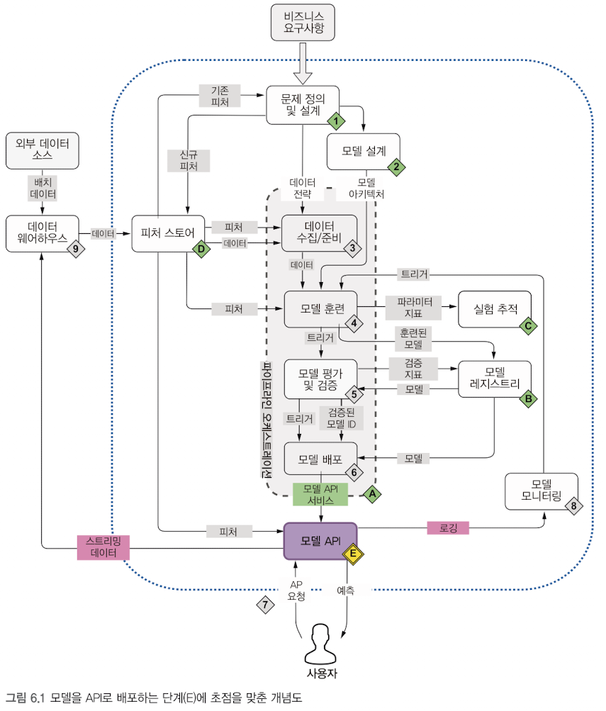
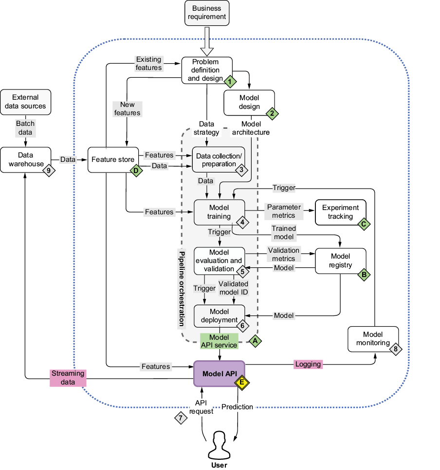
- 무엇이 보이나: ML 수명주기 전체 지도입니다. 위에서 비즈니스 요구사항이 문제 정의(1)·모델 설계(2)로 내려가고, 점선 박스 A(파이프라인 오케스트레이션) 안에서 데이터 수집/준비(3) → 모델 훈련(4) → 평가·검증(5) → 배포(6)가 이어집니다. 옆에는 피처 스토어(D), 실험 추적(C), 모델 레지스트리(B)가 있고, 아래쪽 보라색 모델 API(E) 에 사용자(7)가 "API 요청"을 보내 "예측"을 받습니다. 모델 API의 "로깅"은 모델 모니터링(8)으로 가고, 모니터링의 "트리거"는 다시 모델 훈련으로 돌아갑니다. 두 그림은 같은 내용의 한글판과 영문판입니다.
- 왜 중요한가: 6장이 이 지도의 E(API 배포) 와 8(모니터링) 을 다룬다는 위치 표시입니다. 5장에서 배운 것은 점선 박스 A입니다.
- 읽는 법: 보라색 E 상자에서 시작해 두 갈래를 따로 따라가 보세요. ① 사용자 경로: "API 요청 → 모델 API → 예측". ② 점검 경로: "로깅 → 모니터링 → 훈련 트리거". 모델 레지스트리(B)에서 배포(6)로 가는 "모델" 화살표와 피처 스토어(D)에서 모델 API로 가는 "피처" 화살표도 찾아 보세요.
flowchart LR A["5장 파이프라인 오케스트레이션"] --> E["E 모델 API 서비스 (BentoML과 Yatai)"] E -->|"로깅"| M["8 모델 모니터링 (Evidently)"] M -->|"트리거"| T["4 모델 훈련"] U["7 사용자"] -->|"API 요청"| E E -->|"예측"| U F["D 피처 스토어 (Feast)"] -->|"피처"| E B["B 모델 레지스트리 (MLflow)"] -->|"모델"| E
6장 실습 환경과 버전 — 원문 앞부분 요약
원문 앞머리에는 실습 코드와 환경을 소개하는 접이식 안내가 여러 개 있습니다. 이 문서에서는 목적만 요약합니다.
실습 코드와 버전. 책의 코드는 BentoML 1.1.10(2023-11-20) + Python 3.10 + Evidently 0.5.0 기준입니다. 부록 A 가이드(실습 환경 설치 안내)는 BentoML과 Yatai v1.1.13(차트 1.1.13, 2023-10-09 릴리스) 와 Evidently 0.5.0 을 사용합니다. 선행 조건은 4·5장 실습 환경(MLflow, MinIO, Feast/Redis, KFP)이 준비되어 있는 것입니다.
이 문서에서 말하는 "원문"은 Notion 정리본이며, 맨 앞의 "실습 가이드" 접이식 블록들은 수강생이 자기 환경에서 책 실습을 재현하면서 덧붙인 기록입니다.
원격 서버 환경 참고 — SSH 터널. 원문 실습은 원격 서버에서 이루어집니다. 서비스들은 서버의 127.0.0.1(자기 자신)에만 열려 있어 바깥에서 직접 접속할 수 없으므로, 내 노트북 포트를 서버 포트에 연결하는 SSH 터널로 브라우저에서 접속합니다.
| 서비스 | 서버에서의 포트 | 노트북에서 접속하는 포트(예시) |
|---|---|---|
| KFP | 8080 | 18080 |
| MLflow | 5000 | 15000 |
| Yatai | 8081 | 18081 |
| Evidently | 8000 | 18000 |
| BentoML Swagger (기본 / 드리프트) | 3000 / 3001 | 13000 / 13001 |
접속 계정과 서버 주소는 각각 <SSH_USER>, <REMOTE_HOST> 로 바꿔 읽으세요. 명령은 ssh -N -L <내포트>:127.0.0.1:<서버포트> <SSH_USER>@<REMOTE_HOST> 형태이며, -N은 "명령은 실행하지 않고 터널만 열라"는 뜻입니다.
저자 repo + Python 3.10 가상환경. 저자의 chapter-6 저장소를 받아 서버에 맞게 맞추는 작업입니다. 이유는 모두 "오래된 의존성 조합을 맞추기 위해서"입니다.
- 저자 코드의 MLflow 클라이언트는 2.7.0인데 실습 서버가 3.0.0이라 같은 버전으로 올립니다. 원문은
bentoml==1.1.10이 주석 처리된 requirements도 활성화합니다. litestar==2.12.1,sniffio,python-multipart는 웹 서버 의존성 충돌과 누락을 정리하기 위한 것입니다(정확한 실패 조건은 실제 설치 목록과 오류 출력으로 확인해야 합니다).- KFP 드리프트 컴포넌트 이미지의
python:3.10-slim-buster를bookworm으로 바꾸는 것은, 오래된 Debian 저장소가 이동·종료되어apt가 404를 내는 문제를 피하기 위한 조치입니다. 증상은 이미지를 빌드하는 중apt-get update에서 404가 나는 것이고, 원인은buster용 저장소가 사라진 것이며, 해결은 베이스 이미지를bookworm으로 바꾸는 것입니다. setuptools<81고정은 §2.2의pkg_resources경고와 관련 있습니다.
원문은 새 가상환경(Python 3.10)에서 bentoml, mlflow, evidently, feast를 설치한 뒤 각 버전이 기대한 값(1.1.10 / 3.0.0 / 0.5.0 / 0.40.1)으로 나오는지 확인합니다. 하나의 가상환경에 최신 패키지를 모두 넣는 방식으로 해결하지 않는 것이 요점입니다. 구형 BentoML 환경과 최신 환경을 섞으면 서로 다른 버전 요구가 부딪히기 때문입니다.
6.1 배포 플랫폼으로서의 BentoML
소개 — Bento는 "머신러닝 도시락 상자"
비유. 식당을 처음 열면 주방 설계, 배관, 위생 설비, 배달 체계를 직접 갖춰야 합니다. 도시락 가게라면 표준 도시락 상자를 정해 두고 거기에 음식만 담으면 포장과 배달은 정해진 방식으로 흘러갑니다. BentoML이 바로 이 "도시락 상자 규격"을 제공합니다.
정의. 3장에서 hello-joker 앱을 FastAPI로 배포할 때는 도커 이미지를 빌드하고, 여러 쿠버네티스 매니페스트를 설정하고, 코드에 모니터링 로직을 넣고, CI/CD까지 직접 구성했습니다. 이 모든 설정에는 시간이 많이 들고, 팀의 모든 데이터 과학자가 이를 직접 할 수 있는 것도 아닙니다. BentoML은 모델링 애플리케이션에 필요한 모든 요소를 벤토(Bento) 로 패키징해 배포 과정을 간소화하는 엔드투엔드 솔루션입니다. Bento는 머신러닝 애플리케이션을 위한 통합 배포 형식으로 동작하는 파일 아카이브입니다. 도커 컨테이너와 비슷한 "배포 단위"지만 그 자체가 컨테이너는 아니고, 이미지로 바뀌는 것은 별도 단계(containerize)입니다.
벤토가 애플리케이션을 패키징하는 형식이라면, 배포와 모니터링 UI는 야타이(Yatai) 가 맡습니다. 야타이는 BentoML 프레임워크에서 쿠버네티스 위에 머신러닝 서비스를 배포·확장·모니터링할 수 있는 UI를 제공합니다.
이 문서에서의 쓰임. 이 절에서 소득 분류기를 API 엔드포인트로 배포하는 일은 두 단계입니다.
- 애플리케이션의 벤토를 빌드합니다.
- 야타이를 사용해 벤토를 배포합니다.
그림 6.2 — BentoML이 모델을 서비스로 올리는 흐름
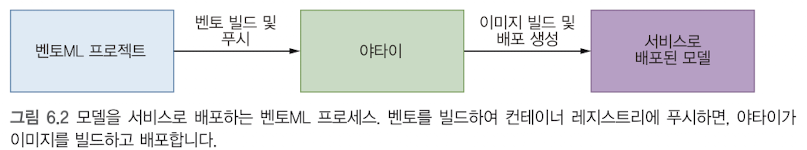
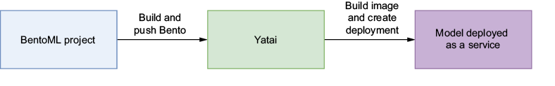
- 무엇이 보이나: 파란 상자 "BentoML 프로젝트"에서 화살표 "벤토 빌드 및 푸시"로 초록 상자 "야타이"에 가고, 다시 화살표 "이미지 빌드 및 배포 생성"으로 보라 상자 "서비스로 배포된 모델"에 이릅니다. 한글 캡션은 "벤토를 빌드하여 컨테이너 레지스트리에 푸시하면, 야타이가 이미지를 빌드하고 배포합니다"입니다.
- 왜 중요한가: 6.1절 전체의 3줄 요약입니다. 개발자가 하는 일(왼쪽 화살표)과 Yatai가 대신 하는 일(오른쪽 화살표)이 나뉩니다.
- 읽는 법: 두 화살표의 목적어를 구분하세요. 첫째는 "벤토(Bento)", 둘째는 "이미지(image)"입니다.
⚠ 원문 정정: 그림 6.2 캡션의 "컨테이너 레지스트리에 푸시"는 이 장의 흐름과 맞지 않습니다. 실습의 bentoml push는 컨테이너 이미지가 아니라 Bento와 모델을 Yatai의 원격 저장소에 올리는 것입니다. 컨테이너 이미지는 그다음에 Yatai의 image-builder가 만들어 Docker/OCI 레지스트리에 저장합니다. Bento push와 이미지 push는 서로 다른 작업입니다.
(참고) BentoML과 BentoCloud 비교
두 가지는 대체 관계가 아니라 같은 Bento를 서로 다른 방식으로 운영하는 관계입니다. 서비스 코드(service.py)는 대부분 그대로 쓰는 것이 설계 의도입니다. 아래 표는 원문 비교를 정리한 것입니다.
| 구분 | BentoML | BentoCloud |
|---|---|---|
| 정체 | 오픈소스 서빙 프레임워크(파이썬 라이브러리·CLI) | BentoML 팀이 운영하는 관리형 배포 플랫폼 |
| 라이선스·비용 | 오픈소스, 무료 | 상용 서비스(요금은 공식 문서로 재확인 필요) |
| 하는 일 | 서비스 코드 작성, 모델 패키징(Bento), 로컬 서빙, 컨테이너 빌드 | Bento를 받아 빌드·배포·스케일링·모니터링을 대신 운영 |
| 인프라 | 직접 준비(Docker, 쿠버네티스 등) | 플랫폼이 제공(자체 클라우드 또는 내 클라우드 연결 방식) |
| 쿠버네티스 배포 | Yatai 등을 직접 설치·운영(6장 방식) | 클러스터 운영 불필요 |
| 스케일링 | HPA 등을 직접 구성 | 자동 스케일링 제공(세부 기능은 공식 문서로 재확인 필요) |
| 운영 부담 | 높음(OOM, 레지스트리, 인증서 등 직접 해결) | 낮음 |
| 통제권·데이터 위치 | 완전한 통제 | 플랫폼 의존, 데이터 위치 정책 확인 필요 |
| 책 6장 실습 | 사용(BentoML 1.1.10 + Yatai 1.1.13) | 사용 안 함 |
참고로 현재 BentoML 공식 홈페이지는 오픈소스 BentoML과 "Bento Inference Platform" 같은 관리형 옵션을 함께 소개합니다. 과거의 상품 이름을 현재 제품 기능표로 단정하지 마세요.
6.1.1 벤토 빌드하기
Bento를 만드는 일은 네 단계입니다.
- BentoML 로컬 스토어에 모델을 등록합니다(MLflow → BentoML로 옮기기).
- 애플리케이션의 API 엔드포인트를 정의하는 서비스를 초기화하고, 추론을 맡는 러너를 만듭니다.
- 요구사항과 환경 변수를 담은
bentofile.yaml을 정의합니다. - 미리 정의된 BentoML 명령으로 Bento를 빌드하고 Yatai에 푸시합니다.
모델 등록 (리스팅 6.1)
비유. 도서관(MLflow)에서 책(모델)을 빌려 내 책장(BentoML 로컬 모델 스토어)에 복사해 두는 일입니다.
정의. Bento 컨테이너는 데이터 과학 모델, 피처 조회 로직, 모델 예측값으로 구성됩니다. 먼저 모델을 Bento 형식으로 저장해야 하는데, 현재 모델은 MLflow에 있습니다. BentoML은 MLflow와 기본 통합되어 있어 bentoml.mlflow.import_model 메서드로 MLflow 모델을 로컬 BentoML 스토어로 가져옵니다. 이 메서드에는 모델 이름과 MLflow 모델 URI(모델 이름과 스테이지)를 줍니다. 원문의 핵심은 다음과 같습니다.
# 목적을 보여 주는 최소 예시 (BentoML 1.1.x API)
mlflow.set_tracking_uri("<MLFLOW_TRACKING_URI>")
bentoml.mlflow.import_model(
"random-forest-classifier",
model_uri="models:/random-forest-classifier/Production",
)
실행 전에 MLflow(5000)와 MinIO(9000)로 포트 포워딩을 열어야 합니다. 모델 파일 본체는 MinIO에 있기 때문입니다. 접속 자격증명은 <MINIO_ACCESS_KEY>, <MINIO_SECRET_KEY>로 읽으세요(원문은 Kubeflow 번들 MinIO의 공개 기본 계정을 실습용으로 썼으며, 실제 환경에서는 반드시 바꿔야 합니다).
bentoml models list는 이름과 태그, Module(출처, 여기서는 bentoml.mlflow), 크기, 생성 시각을 보여 줍니다. 원문 예시는 random-forest-classifier:<해시> 37.02 MiB입니다. 가져오면 BentoML 고유 태그가 붙고, 이후 요청마다 MLflow 서버에서 모델을 다시 내려받는 것은 아닙니다.
⚠ 원문 정정:Production은 MLflow의 모델 단계(stage) 이름이며 정확도 등급이 아닙니다. 또한 모델명·단계로 선택한 모델과 이후random-forest-classifier:latest로 읽는 Bento 모델 태그,column_list.pkl이 들어 있는 MLflow Run은 각각 독립적으로 조회됩니다. 그래서 항상 같은 승인 버전을 가리킨다고 보장되지 않습니다. 배포 재현성을 위해서는 실제로 가져온 불변 Bento 모델 태그와 열 목록 아티팩트가 나온 Run을 함께 기록해 고정하세요. 또한 현재 MLflow 문서는 stage 방식 대신 alias(models:/이름@alias) 사용을 권장하므로(공식 문서로 재확인 필요), 최신 환경에서는 alias로 바꾸는 것이 안전합니다.
(참고) pkg_resources 경고
bentoml models list를 실행하면 다음과 같은 경고가 나옵니다.
UserWarning: pkg_resources is deprecated as an API ... slated for removal as early as 2025-11-30. Refrain from using this package or pin to Setuptools<81.
- 의미: 오래된 패키지 조회 기능(
pkg_resources)이 곧 폐기될 예정이라는 안내입니다. - 출처: BentoML 1.1.10이 의존하는
fs패키지가import pkg_resources를 합니다. - 영향: 이 경고만으로는 빌드가 실패하지 않습니다(원문에서도 빌드는 정상 종료).
- 진짜 위험: setuptools에서 이 모듈이 실제로 제거되면
No module named 'pkg_resources'로 BentoML이 실행되지 않습니다. - 해결 방안(원문): ① 그대로 둔다(권장,
setuptools<81고정 유지) ②PYTHONWARNINGS로 메시지만 숨긴다 ③ setuptools를 더 낮춘다(원문에서도 실제로 시험하지 않음) ④fs를 쓰지 않는 BentoML 1.2 이상으로 올린다(다만 Yatai 1.1.13과의 호환 기준에서 벗어나므로 비권장).
⚠ 원문 정정: 원문은 "setuptools 81 이상에서 제거된다"고 설명하지만, 공식 문서에 따르면pkg_resources가 실제로 제거된 것은 setuptools 82.0.0 입니다. 경고 문구의<81고정은 과거 안내에 따른 보수적 조치로는 의미가 있지만, "81 이상은 모두 제거"라고 읽으면 틀립니다. 예정일(2025-11-30)과 실제 제거 릴리스를 구분하세요.PYTHONWARNINGS는 메시지만 숨길 뿐 쓰고 있는 낡은 기능을 바꾸지 않습니다.
서비스와 러너 초기화 (리스팅 6.2)
비유. 서비스는 "주문 접수 → 재료 가져오기 → 조리 → 포장" 매뉴얼입니다. 러너는 조리만 전담하는 요리사로, 홀 직원(API 서버)과 분리되어 따로 늘릴 수 있습니다.
정의. 서빙은 BentoML의 핵심 컴포넌트입니다. 서비스를 이용하면 모델의 서빙 로직을 정의할 수 있고, 이 장에서의 서빙 로직은 "Feast에서 피처를 가져온 다음 모델 추론을 수행"하는 것입니다. 이 로직은 service.py에 씁니다. 러너는 원격 파이썬 워커에서 실행될 수 있는, 독립적으로 확장 가능한 연산 단위입니다. API 서버가 시작되면 러너 워커 프로세스 그룹이 생기고, 서비스가 호출하는 run 메서드는 그 러너 워커들 사이에 스케줄링됩니다.
원문은 bentoml.mlflow.get("random-forest-classifier:latest").to_runner()로 MLflow 모델을 러너로 바꾸고, bentoml.Service("income_classifier_service", runners=[income_clf_runner])로 svc 객체를 만듭니다. 러너를 2개 이상 두면 여러 모델을 백그라운드에서 동시에 돌려 비교할 수 있지만 여기서는 income_clf_runner 하나만 씁니다.
@svc.on_startup이 붙은 initialise 함수가 서비스 시작 때 하는 일은 다음과 같습니다.
python-dotenv로.env파일의 환경 변수를 불러옵니다.- MLflow 클라이언트를 만들어
Production단계 모델의run_id를 찾습니다. - 그 Run의 아티팩트
column_list.pkl(학습 때 만든 더미 열 목록)을 내려받습니다. - MinIO 접속 정보(접근 키, 비밀 키, 호스트, Feast 레지스트리가 든 버킷,
feature_store.yaml)와 Redis 정보로 Feast 피처 스토어 객체를 만듭니다. - 피처 스토어·열 목록·피처 목록(
Sex,Native_country,Race,Relationship,Marital-Status,Workclass,Education,Occupation8개)을 서비스 컨텍스트(context.state)에 저장해 요청마다 재사용합니다.
구분해서 기억하세요. Feast의 레지스트리 파일(
feature_store.yaml등)은 MinIO에서 읽고, 추론에 쓰는 피처 값은 Redis(온라인 스토어)에서 읽습니다. MinIO는 파일 창고, Redis는 빠른 선반입니다.
서비스 정의 (리스팅 6.3)
비유. 회원 번호로 고객 기록을 찾아 주문을 처리하는 접수 창구입니다.
정의. 서비스의 입력은 user_id(Feast 용어로 엔티티)입니다. IncomeClassifierUsers 입력 모델을 BentoML JSON으로 감싸 API 입력을 정의하고, @svc.api(input=..., output=JSON(), route="/predict")로 엔드포인트를 만듭니다. predict 함수는 다음 순서로 동작합니다.
- 입력을 딕셔너리로 바꿔
feature_store.get_online_features(...)로 해당 사용자의 피처를 조회합니다. user_id열을 떼고,InputMapper가col_list에 맞춰 피처를 더미 열에 매핑한 모델 입력 데이터프레임을 만듭니다. 학습 때의 열 이름·순서와 어긋나면 모델 입력의 의미가 달라지므로 열 목록을 보관해 두는 것입니다.- 러너가
predict.run으로 예측합니다. OutputMapper가 모델 출력을 소득 범주로 바꿉니다(0 = <=50K,1 = >50K).{"income_category": ..., "user_id": ...}를 반환합니다.
sequenceDiagram participant U as "요청자" participant A as "BentoML API 서버" participant F as "Feast" participant R as "Redis 온라인 스토어" participant M as "모델 Runner" U->>A: "user_id를 POST /predict로 전달" A->>F: "엔티티 키로 온라인 피처 요청" F->>R: "피처 값 조회" R-->>F: "8개 입력 피처" F-->>A: "피처 데이터프레임" A->>A: "학습 열 목록에 맞춰 더미 인코딩" A->>M: "입력 전달과 predict 실행" M-->>A: "예측 클래스" A-->>U: "user_id와 income_category"
참고: "실시간 API"는 요청이 올 때 예측한다는 뜻이며, 온라인 저장소의 데이터가 요청마다 원천에서 갱신된다는 뜻은 아닙니다. 최신 피처 공급은 앞선 장의 수집·반영(materialization) 흐름에 달려 있습니다. 또 서비스 시작 때 MLflow·MinIO에서 열 목록과 참조 데이터를 조회하므로, 완전히 독립적인 오프라인 서비스는 아닙니다.
bentofile.yaml 정의하기 (리스팅 6.4)
비유. 도시락에 무엇을 넣을지 적은 구성 주문서입니다. Dockerfile과 비슷하지만 더 간결합니다.
정의와 필드.
| 필드 | 뜻 |
|---|---|
service: "service:svc" |
파일명:서비스객체명. service.py의 svc 객체를 가리킵니다 |
labels |
키-값 메타데이터(예: 담당 팀 owner: ml-engineering-team) |
include |
Bento에 포함할 파일(service.py, src/*.py, requirements.txt, 환경 설정 파일 등) |
python.requirements_txt |
설치할 파이썬 의존성 목록 파일 |
docker.env |
이미지 환경 변수. ENV_NAME은 코드가 쓸 설정 파일을 고르는 값이고, AWS 변수는 Feast가 MinIO에서 피처 정보를 읽을 때 쓰입니다 |
# 구조 설명용 예시 (비밀값은 넣지 않았습니다)
service: "service:svc"
labels:
owner: ml-engineering-team
include:
- "service.py"
- "src/*.py"
- "requirements.txt"
python:
requirements_txt: requirements.txt
docker:
env:
- ENV_NAME=production
⚠ 원문 정정 (보안): 원문 예제는production.env,*.env와 접속 키를 Bento의include·docker.env에 평문으로 포장합니다. 이렇게 하면 이미지와 Bento 메타데이터에 비밀이 남습니다. 책 예제의 기본 계정은 실습용이라 쓸 수 있지만, 비밀값이 든 env 파일과 키는 Bento에 포장하지 말고 쿠버네티스 Secret 같은 보호된 외부 설정으로 주입해야 합니다. 이 문서는 해당 값을<MINIO_ACCESS_KEY>,<MINIO_SECRET_KEY>,<FEAST_REDIS_PASSWORD>로만 표현합니다. 또한 원문 일부는ENV_NAME=local인데 저자 README는 production 빌드 전에 production으로 바꾸라고 안내하므로, 의도한 설정 파일이 선택되는지 확인하세요.
직접 해 보기 — Bento 상자에 물건 담기
위 bentofile.yaml의 include와 requirements_txt가 하는 일을 눌러서 확인해 보세요. "다음 물건 담기"를 누르면 Bento 도시락 상자가 채워지는 순서가 보입니다. (학습용으로 단순화한 그림입니다.)
BentoML과 Yatai Stack 아키텍처
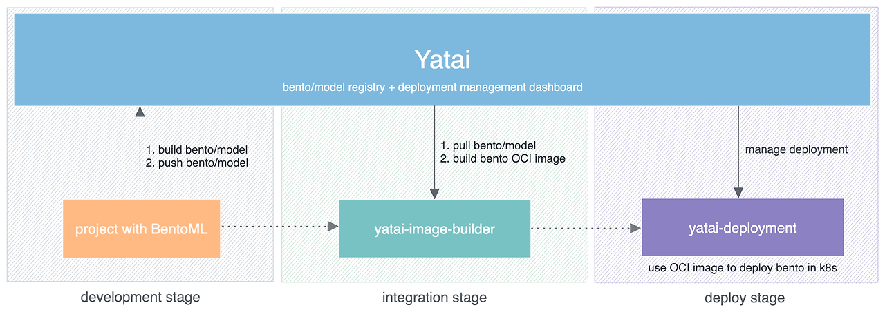
- 무엇이 보이나: 맨 위의 파란 넓은 상자는 "Yatai — bento/model registry + deployment management dashboard"입니다. 아래에 세 구역이 있습니다. 왼쪽 development stage의 주황 상자 "project with BentoML", 가운데 integration stage의 청록 상자 "yatai-image-builder", 오른쪽 deploy stage의 보라 상자 "yatai-deployment"입니다. 프로젝트에서 Yatai로 "1. build bento/model 2. push bento/model", Yatai에서 image-builder로 "1. pull bento/model 2. build bento OCI image", Yatai에서 deployment로 "manage deployment"가 이어지고, 아래에는 "use OCI image to deploy bento in k8s"라고 적혀 있습니다.
- 왜 중요한가: 네 구성 요소의 책임 경계를 한 장에 보여 줍니다. 모든 흐름이 Yatai를 거치므로 Yatai가 허브입니다.
- 읽는 법: 왼쪽에서 오른쪽으로 "패키징 → 이미지 만들기 → 이미지 운영" 순서로 읽고, 위의 관리 대시보드와 연결선을 따라가 보세요. (출처: 원문이 인용한 BentoML/Yatai 스택 설명 블로그 그림)
원문의 요약은 다음과 같습니다.
- Bento: ML 모델을 API로 호출할 수 있도록 감싼 소스코드 집합(tar 파일이고 컨테이너가 아님)
- Yatai: 모델과 Bento를 오브젝트 스토리지에 저장하는 레지스트리 관리 대시보드 컴포넌트
- Yatai Image Builder: Bento를 컨테이너 이미지로 빌드하는 컴포넌트
- Yatai Deployment: Bento 컨테이너 이미지를 서비스로 배포하는 컴포넌트
⚠ 원문 정정: 원문은 yatai-deployment를 "Swagger 형태로 배포하는 컴포넌트"라고 쓰지만 Swagger는 실행 형식이 아닙니다. deployment는 서비스를 배포하고, 그 서비스가 Swagger UI를 제공합니다. 또 "Bento Store(모델 스토어)"처럼 쓰이는 용어는 구분해야 합니다. 모델 스토어는 모델을, Bento 스토어는 만들어진 Bento를 보관합니다.
한 줄 요약(원문).
- MLflow = 실험 기록 + "어떤 버전이 승인됐나"의 기준
- Bento = 승인된 버전을 코드와 함께 고정한 배포 단위
- Yatai = Bento를 이미지로 만들어 배포하는 도구
6.1.2 벤토 빌드 및 푸시
서비스와 bentofile.yaml을 정의했으니, 이제 다음 순서로 진행합니다.
sequenceDiagram participant Dev as "개발자 PC" participant Store as "로컬 Bento 스토어" participant Y as "Yatai" Dev->>Store: "bentoml build -f bentofile.yaml" Store-->>Dev: "Bento 태그 출력" Dev->>Dev: "containerize 후 docker run으로 로컬 시험" Dev->>Y: "bentoml yatai login (API 토큰)" Dev->>Y: "bentoml push (모델과 Bento 업로드)"
1) 빌드. bentoml build -f bento/bentofile.yaml을 실행하면 Successfully built Bento(tag="income_classifier_service:<해시>")가 출력되고, 다음 단계로 bentoml containerize(또는 bentoml build --containerize)와 bentoml push(또는 bentoml build --push)를 안내합니다.
2) 목록 확인. bentoml list는 새로 만든 Bento의 태그와 Size(애플리케이션 크기, 예: 22 KiB), Model Size(모델 크기, 예: 37 MiB)를 보여 줍니다. 앱 코드는 작고 모델이 대부분이라는 점이 보입니다.
3) 컨테이너화와 로컬 실행. bentoml containerize <BENTO_TAG>는 로컬 Bento 스토어의 Bento를 OCI 컨테이너 이미지로 빌드하는 단계입니다. 공식 문서에 따르면 BuildKit을 기본으로 사용하고 DOCKER_BUILDKIT=0으로 끌 수 있습니다. 그다음 docker run --rm -p 3000:3000 <이미지>로 컨테이너를 실행하고 localhost:3000의 Swagger에서 /predict를 시험합니다. 실행 전에 MinIO, Redis, MLflow 서비스로 포트 포워딩 세 개를 열어 두는 이유는, 컨테이너 안의 서비스가 모델·아티팩트·피처를 가져와야 하기 때문입니다. 원문은 컨테이너에 sh로 들어가 모델과 아티팩트가 있는지 확인해 보라고 권합니다.
4) 원문 환경에서 containerize가 실패한 사례. 원문 실습 환경에서는 bentoml containerize가 NotImplementedError로 실패했고, 같은 기능의 내부 함수 bentoml._internal.container.build(bento_tag, backend="docker", tag=(...))를 파이썬으로 직접 호출하는 스크립트로 우회했습니다. 이때 원문의 주의는 "Bento 디렉터리에서 그냥 docker build를 하면 모델이 빠진 이미지가 된다"는 것입니다. 호스트 포워딩이 127.0.0.1에만 열려 있어서 --network host와 --add-host host.docker.internal:127.0.0.1도 함께 씁니다.
⚠ 원문 정정 (정리): 이NotImplementedError가 1.1.x의 일반적인 버그인지는 알려져 있지 않습니다. 공식 1.1.10 소스에는containerize구현이 실제로 있으며, "1.1.x는 원래 미구현"이나 "Python 3.10이면 항상 실패"라는 설명은 근거가 없습니다. 원문에는 전체 오류 출력(traceback)과 정확한 BentoML·Python·OS·빌더 백엔드 버전이 없어서 원인을 단정할 수 없습니다. 내부 함수 우회는 그 버전에 의존하는 임시 방법이지 장기 운영 표준이 아닙니다. 또 호스트 네트워크·host.docker.internal설정은 해당 Linux Docker 환경의 포트 포워딩에 연결하려는 설정일 뿐, 쿠버네티스 파드나 모든 macOS Docker에 보편 적용되는 규칙이 아닙니다.
🩺 문제 해결 —bentoml containerize가NotImplementedError로 실패할 때
증상: 컨테이너 이미지를 만들려는 명령이 바로 예외로 끝납니다.
원인: 원문은 원인을 분석하지 않았고, 위 정정대로 일반적인 버그인지도 확인되지 않았습니다. 컨테이너 백엔드를 고르는 과정에서 "구현되지 않은 백엔드"를 걸러 낼 때 쓰이는 예외로 보이지만 확정하지 못했습니다.
해결 또는 판단: 원문은 내부build()를 파이썬으로 직접 호출하는 방식으로 우회했습니다. 이는 임시 방법이므로, 같은 오류를 만나면 전체 오류 출력과 BentoML·Python 버전을 먼저 기록하세요.
5) Yatai에 로그인하고 푸시. 테스트가 끝나면 Yatai가 Bento를 가져와 클러스터에서 배포할 수 있도록 원격 Bento 스토어에 푸시합니다.
- Yatai 서비스로 포트 포워딩을 엽니다.
- Yatai UI에서 API 토큰을 발급합니다(아래 그림).
bentoml yatai login --api-token <YATAI_API_TOKEN> --endpoint <YATAI_URL>로 로그인합니다.bentoml push income_classifier_service로 최신 Bento와 모델을 올립니다("Successfully pushed model … bento …").
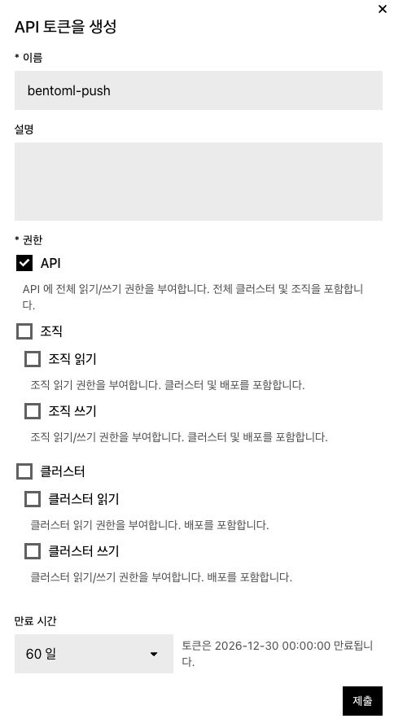
- 무엇이 보이나: "API 토큰을 생성" 창에 이름(
bentoml-push), 설명, 권한 체크 목록(API / 조직 / 조직 읽기 / 조직 쓰기 / 클러스터 / 클러스터 읽기 / 클러스터 쓰기), 만료 시간(60일)이 있고 API만 체크되어 있습니다. - 왜 중요한가: CLI의
bentoml push가 Yatai에 올라가려면 인증과 권한이 필요합니다. 원문 설명대로 'API'는 모든 클러스터·조직의 읽기/쓰기 전체를 허용하는 넓은 권한이고, '조직'·'클러스터' 항목은 그보다 좁은 범위입니다. - 읽는 법: 실제 환경에서는 필요한 범위만 고르고, 만료가 있다는 점과 토큰은 비밀로 다룬다는 점을 기억하세요. 토큰 값은 이 문서에 적지 않았습니다.
직접 해 보기 — Bento가 배포되기까지
버튼을 눌러 단계를 앞으로 보내 보세요.
6.1.3 벤토 배포하기 + Yatai Stack
벤토를 Yatai에 푸시했다면 이제 배포합니다. 그 전에, 배포를 가능하게 하는 Yatai Stack을 클러스터에 설치하는 구간(원문 앞부분의 "Yatai 1.1.13", "yatai-deployment" 접이식 블록)이 어떤 목적인지 먼저 정리합니다. 설치 명령 전체는 별도 실습 문서가 맡고, 여기서는 "무엇을 왜 하는지"를 설명합니다.
Yatai 1.1.13 설치 (ClusterIP)
비유. 도시락 물류센터를 열려면 먼저 장부 보관소(데이터베이스) 와 창고(오브젝트 스토리지) 가 있어야 합니다.
정의와 순서.
- Helm 저장소 추가: Yatai 설치 패키지(Helm 차트)를 받을 곳을 등록합니다.
- DB·버킷·Secret 준비: PostgreSQL에
yatai전용 DB와 사용자를 만들고, S3 호환 저장소(MinIO)에yatai버킷을 만듭니다. 비밀번호는 무작위로 만들어 쿠버네티스 Secret에만 저장합니다. helm install yatai ... --version 1.1.13: values 파일에 PostgreSQL 주소,yatai버킷, Secret 이름,doNotTrack: true를 지정합니다. 서비스는 ClusterIP이며ingress는 끕니다.- 포트 포워딩으로 접속: 외부 ingress 대신
kubectl port-forward로 연 뒤 브라우저에서/setup?token=<초기화 토큰>에 들어가 관리자 계정(<YATAI_ADMIN_USER>,<YATAI_ADMIN_EMAIL>,<YATAI_ADMIN_PASSWORD>)을 만듭니다. 초기화 토큰은 관리자 생성용, API 토큰은 CLI push 인증용으로 서로 다른 용도입니다. - API 토큰 발급: 앞의
bentoml-push토큰 창입니다. - BentoML ↔ Yatai 연결:
bentoml yatai login ...후bentoml push로 모델과 Bento를 올립니다.
🩺 문제 해결 — Yatai 차트 설치 후 S3 접근 오류가 날 때
증상: 설치는 끝났는데 Yatai가 오브젝트 스토리지(S3 호환)의 비밀 키를 읽지 못합니다.
원인: 차트의values.yaml기본 항목 이름에 오타(aceess…)가 그대로 남아 있어, 기본값에 기대면 올바른 키 이름이 전달되지 않습니다.
해결:s3.accessKeyExistingSecretKey를 values 파일에서 직접 지정합니다.
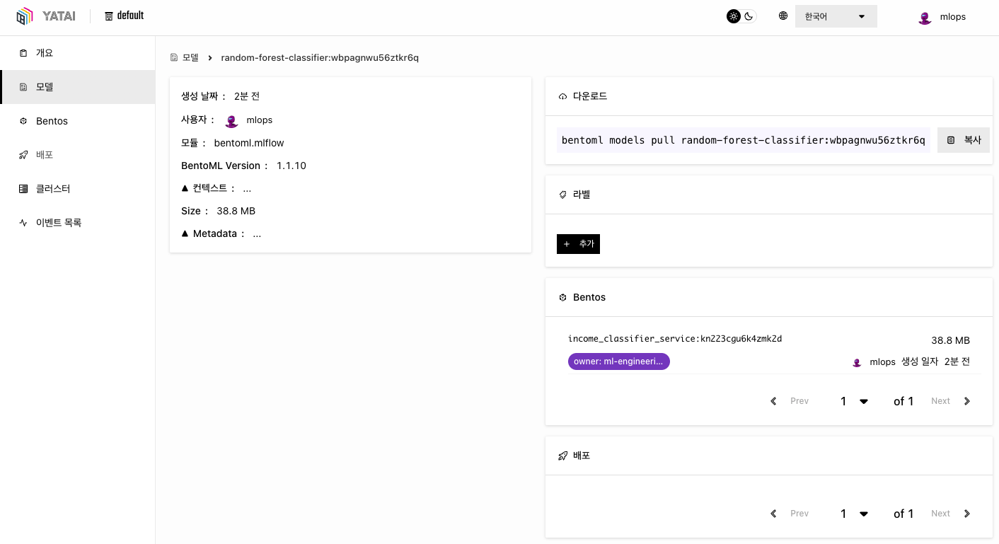
- 무엇이 보이나: 경로 "모델 > random-forest-classifier:<버전>". 왼쪽 카드에 생성 시각(2분 전), 등록 사용자, 모듈
bentoml.mlflow, BentoML 버전 1.1.10, 크기 38.8 MB가 있습니다. 오른쪽에는bentoml models pull …다운로드 명령(복사 버튼), 라벨, 이 모델을 쓰는 Bento 목록, 배포 목록(비어 있음)이 있습니다. - 왜 중요한가: 모델이 MLflow → BentoML 스토어 → Yatai 원격 스토어로 잘 올라갔다는 확인 화면입니다. 모듈이
bentoml.mlflow이므로 출처가 MLflow임도 드러납니다. 모델과 Bento가 서로 다른 관리 대상이면서 연결되어 있다는 점도 보입니다. - 읽는 법: "배포" 카드가 비어 있는 것은 아직 배포 전이기 때문입니다. 화면의 사용자명은 등록 사용자일 뿐이며 이 문서에는 적지 않습니다.
yatai-deployment, yatai-image-builder, cert-manager, 레지스트리
원문의 "yatai-deployment (Yatai로 배포하기)" 접이식 블록은 세 가지를 함께 설치합니다. 1.1.x에서는 배포에 필요한 Bento 리소스를 yatai-image-builder가 만들기 때문에 둘 다 설치하고, 버전은 Yatai와 같은 1.1.13으로 맞춥니다. ingress-nginx는 설치하지 않고 접속은 kubectl port-forward로 합니다.
| 구성 요소 | 하는 일 | 비유 |
|---|---|---|
| cert-manager v1.16.2 | image-builder와 deployment 두 차트의 웹훅 인증서(자체 서명 Issuer/Certificate)를 자동 발급 | 사내 신분증 발급처 |
| 내부 Docker 레지스트리 + 노드용 프록시 | 빌드된 이미지를 보관(PVC). 노드의 containerd는 클러스터 안쪽 DNS 이름을 풀지 못하므로, 노드의 127.0.0.1:5000을 레지스트리 Service로 넘기는 프록시(socat DaemonSet, hostPort)를 둡니다. 그래서 이미지 pull은 127.0.0.1:5000, kaniko push는 클러스터 내부 이름으로 합니다 |
창고 + 노드 앞 임시 접수대 |
| yatai-image-builder | Bento를 kaniko로 컨테이너 이미지로 빌드해 레지스트리에 push합니다(BentoRequest 처리). 설정: dockerRegistry.server=127.0.0.1:5000, inClusterServer=…svc.cluster.local:5000, secure: false, bentoImageBuildEngine: kaniko |
포장 라인 |
| yatai-deployment | BentoDeployment를 처리해 API 서버·러너 파드와 Service를 만듭니다. 설정: ingressClass: nginx, domainSuffix: yatai.local, automaticDomainSuffixGeneration: false, 배포 네임스페이스 yatai |
배달 기사 |
automaticDomainSuffixGeneration: false인 이유(원문): 기본값은 ingress-nginx의 외부 IP로 *.sslip.io 도메인을 자동 만드는데, 실습용 kind에는 외부 IP도 ingress-nginx도 없으므로 고정값을 줍니다. Ingress 객체는 만들어지지만 컨트롤러가 없어 쓰이지 않으며, 접속은 포트 포워딩으로 합니다.
설치 확인. helm list -A에 yatai, yatai-image-builder(-crds), yatai-deployment(-crds)가 1.1.13으로 deployed여야 하고, 레지스트리와 프록시, image-builder 파드가 Running이어야 합니다. 컴포넌트는 설치 직후 Yatai의 default 클러스터에 스스로 등록됩니다(yatai_component 테이블에 행 2개). 등록 후 화면을 새로고침하면 "배포" 메뉴가 활성화됩니다.
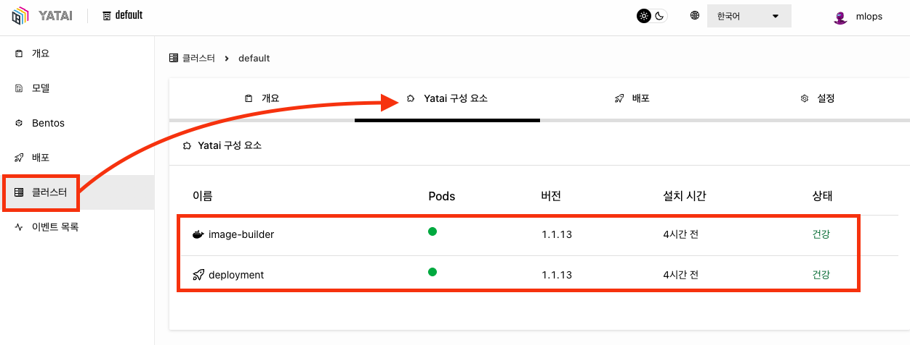
- 무엇이 보이나: 사이드바 "클러스터"에서 상단 탭 "Yatai 구성 요소"로 가는 빨간 화살표가 있고, 목록에
image-builder와deployment두 줄(초록 점, 버전 1.1.13, 설치 4시간 전, 상태 "건강")이 있습니다. - 왜 중요한가: 두 구성 요소가 설치 후
default클러스터에 등록되었다는 뜻이며, 이래야 "배포" 메뉴가 활성화됩니다. Yatai 본체 외에 이미지 제작·배포 구성 요소가 필요하다는 점도 보여 줍니다. - 읽는 법: 이름·버전·상태를 나란히 읽으세요. 둘 중 하나라도 안 보이면 배포 버튼이 동작하지 않는다고 이해하면 됩니다.
참고 — 배포 전에 점검할 부분. 원문도 이 Bento의 MLflow·Feast·Redis 주소가 로컬 포워딩 기준일 가능성이 크고, 그렇다면 클러스터 파드에서는 접근되지 않으므로
production.env의 주소를 클러스터 내부 서비스 이름으로 바꾸고 Bento를 다시 빌드해야 한다고 적었습니다. 실제로 배포할 때는 이 주소를 반드시 확인하세요.
직접 해 보기 — Yatai가 받아서 빌드하고 배포하기까지
위 표의 구성 요소가 각각 언제 일하는지 단계 버튼으로 확인하세요. (학습용으로 단순화한 그림입니다.)
Yatai 스택의 현재 유지보수 상태
원문은 "Yatai v1.1.13(차트 1.1.13, 2023-10-09, 마지막 릴리스)"라고 적었습니다.
⚠ 원문 정정: Yatai 본체(core) 저장소는 마지막 릴리스가 v1.1.13(2023-10-09)이고, 2026-06-11에 소유자가 보관(archived, 읽기 전용) 처리했습니다. 이 부분은 원문과 일치합니다. 그러나 "Yatai 스택 전체가 2023년에 멈췄다"는 일반화는 틀립니다. yatai-deployment 저장소의 최신 릴리스는 v1.1.21(2024-03-28)이고, yatai-image-builder는 3.x대 버전(v3.0.48, 2026-10-23)이 나와 있습니다. 다만 builder 3.x는 버전 체계가 달라 원문의 1.1.13 조합과 호환되는지는 별도로 확인해야 합니다(최신 builder가 구형 core와 자동 호환된다고 단정하지 마세요). 또한 Yatai 공식 README는 BentoML 1.2 지원이 "작업 중"이라고 안내했고, 1.1로 만든 Bento는 1.2에서도 동작하며 1.1에는 중대한 버그·보안 패치를 백포트하겠다는 방침이 있었습니다. 따라서 Yatai 1.1.13 조합은 "core가 보관된 구 계열"로 이해하는 것이 합리적입니다.
배포 화면: 모델 확인 → Bento 확인 → 배포 만들기
그림 6.3 — Models 탭
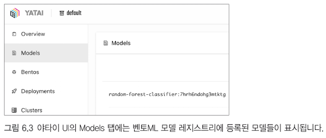
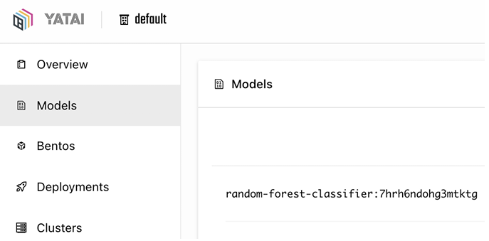
- 무엇이 보이나: Yatai 사이드바(Overview, Models, Bentos, Deployments, Clusters)와 Models 화면의
random-forest-classifier:<버전>한 줄입니다. - 왜 중요한가:
bentoml push로 모델이 원격 모델 스토어에 올라갔는지 확인하는 첫 번째 단계입니다. - 읽는 법: 태그의 콜론 뒤 문자열이 모델 버전입니다. 책의 태그와 내 실습의 태그가 다른 것이 정상입니다.
그림 6.4 — Bentos 탭
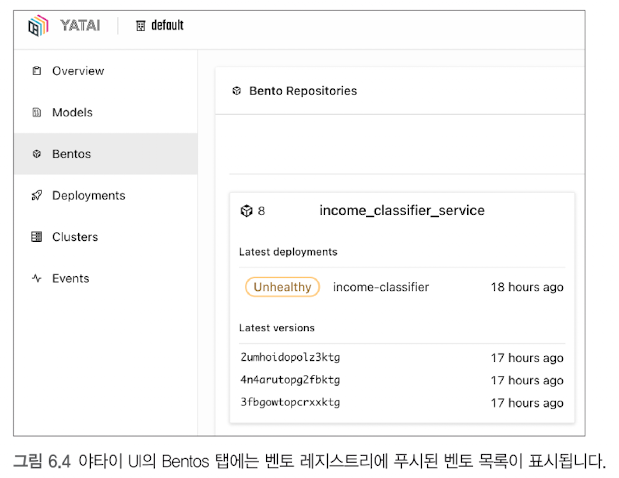
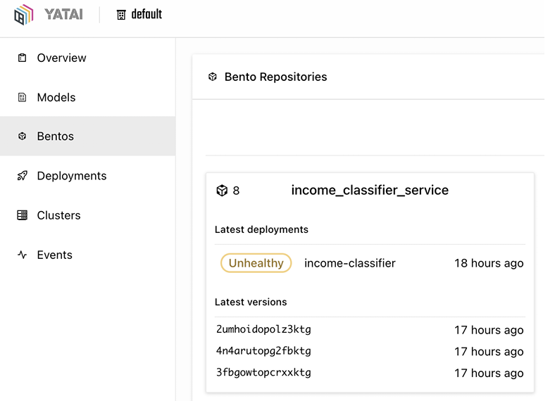
- 무엇이 보이나: "Bento Repositories"에
income_classifier_service(8개 버전), "Latest deployments: Unhealthy", "Latest versions" 3개가 있습니다. - 왜 중요한가: Bento가 저장소에 올라갔음을 보여 줍니다. 눈여겨볼 점은 이전 배포가 Unhealthy로 표시되어 있다는 것입니다. 패키지가 존재해도 배포가 건강하다는 뜻은 아니며, 배포가 항상 한 번에 성공하지 않는다는 현실을 보여 줍니다(이 그림만으로 원인은 알 수 없습니다).
- 읽는 법: 위의 서비스 이름, 아래 버전 목록, 주황색 건강 표시를 따로 읽어 모델 버전·Bento 버전·배포 상태를 혼동하지 마세요.
그림 6.5 — Deployments에서 Create
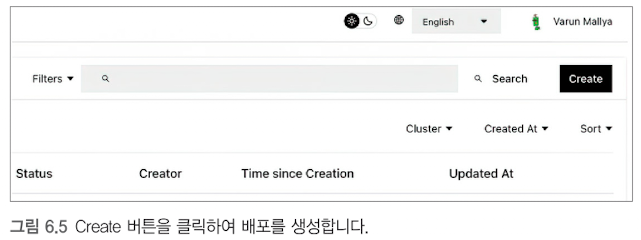
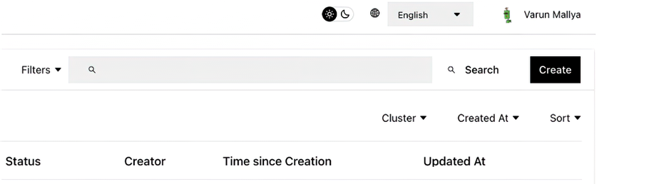
- 무엇이 보이나: Deployments 목록 상단의 필터·검색·검은색 Create 버튼과, Status / Creator / Time since Creation / Updated At 열 머리글입니다.
- 왜 중요한가: 배포 생성의 시작점입니다. 이 Create는 Bento를 업로드하는 버튼이 아니라 배포를 만드는 버튼입니다.
- 읽는 법: 목록이 비어 있는 상태의 화면입니다.
그림 6.6 — 배포 이름과 Bento 선택
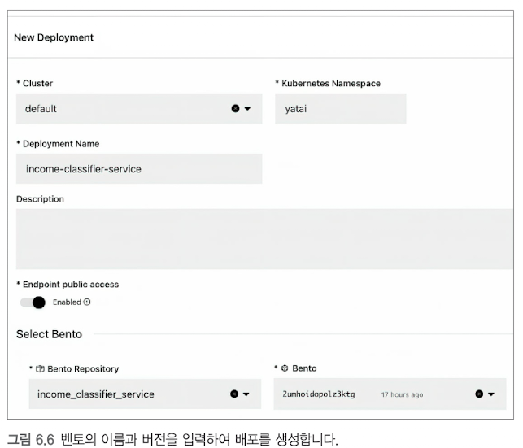
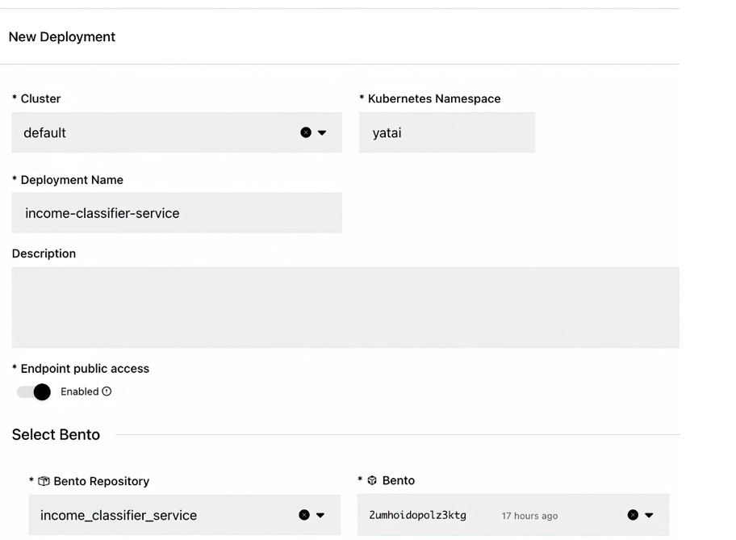
- 무엇이 보이나: "New Deployment" 폼. Cluster
default, Kubernetes Namespaceyatai, Deployment Nameincome-classifier-service, Description, "Endpoint public access" 토글(Enabled), 그리고 "Select Bento"의 Bento Repositoryincome_classifier_service와 Bento 태그입니다. - 왜 중요한가: 어떤 Bento를 어느 클러스터·네임스페이스에 어떤 이름으로 배포할지 정하는 최소 입력입니다. "Endpoint public access"를 켜면 Ingress가 만들어집니다. 네임스페이스
yatai는 yatai-deployment 설정의 배포 네임스페이스와 같아야 합니다. - 읽는 법:
*표시는 필수 입력입니다. 위쪽은 "어디에", 아래 Select Bento는 "무엇을"입니다.
그림 6.7 — 복제본과 자원
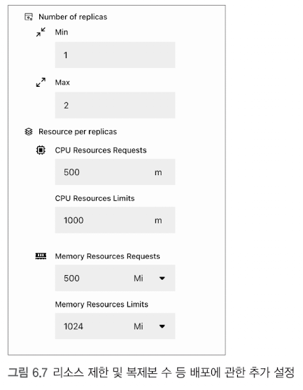
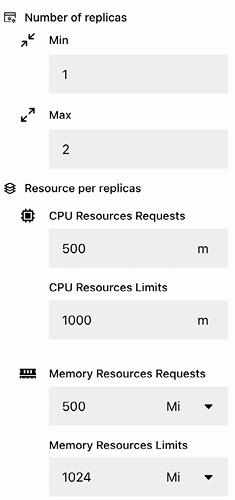
- 무엇이 보이나: Number of replicas Min 1 / Max 2, Resource per replicas: CPU Requests 500 m, CPU Limits 1000 m, Memory Requests 500 Mi, Memory Limits 1024 Mi입니다.
- 왜 중요한가: 오토스케일 범위와 파드당 자원 요청·상한을 정합니다. requests는 최소 보장, limits는 이를 넘으면 제한되거나 OOMKilled되는 상한입니다. m은 밀리코어(1000m = 1코어)이고 Mi는 메비바이트입니다.
- 읽는 법: 원문 실습은 이 화면의 값을 본인 환경에 맞게 키워 메모리 requests 512Mi, limits 4Gi 등으로 입력했습니다. 이 설정은 서빙(API 서버·러너) 파드에 적용되며, 아래의 이미지 빌더 파드에는 적용되지 않는 것으로 보입니다.
그림 6.8 — 이미지 빌더 Job
배포를 Submit하면 Yatai는 내부적으로 쿠버네티스 잡(Job) 을 실행해 이미지를 도커 이미지로 빌드합니다. 이 경우 yatai-bento-image-builder-income-classifier-…라는 잡이 실행됩니다.
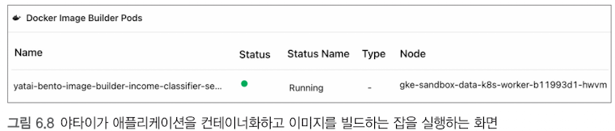
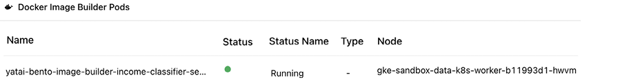
- 무엇이 보이나: "Docker Image Builder Pods" 표에 빌더 파드가 이름·상태(초록 점, Running)·노드 열로 나옵니다.
- 왜 중요한가: 서비스가 뜨기 전에 이미지 제작 작업이 먼저 진행됩니다. 바로 이 파드가 아래에서 OOM으로 죽는 대상입니다.
- 읽는 법: Running은 "제작 중"이지 "배포 완료"가 아닙니다.
이미지 빌더가 메모리 부족(OOM)으로 죽을 때 해결하기
비유. 제품을 조립하는 임시 책상은 판매 직원의 책상과 다릅니다. 조립에 필요한 공간이 모자라면 작업이 중단됩니다.
증상과 원인. 배포 직후 kubectl get pod -n yatai를 보면 yatai-bento-image-builder-… 파드가 OOMKilled 이고, kubectl get bentorequest의 IMAGE-BUILDER-POD-PHASE가 Failed입니다. 파드 정의를 보면 builder 컨테이너(이미지 quay.io/bentoml/kaniko:1.9.1)의 메모리가 limit 3Gi / request 1Gi였습니다. 이미지 빌드는 의존성 설치, 파일 복사, 파일시스템 스냅샷 같은 임시 자원을 쓰므로, 모델 파일이 37MiB여도 필요한 최대 메모리가 그 정도라는 뜻이 아닙니다. 다만 어느 작업이 실제로 피크를 만들었는지는 원문 로그만으로 알 수 없습니다.
해결. BentoRequest의 spec.imageBuilderContainerResources를 고칩니다. 요청(requests)을 CPU 500m, 메모리 2Gi로, 상한(limits)을 CPU 2, 메모리 6Gi로 올렸습니다.
spec:
imageBuilderContainerResources:
requests:
cpu: "500m"
memory: "2Gi"
limits:
cpu: "2"
memory: "6Gi"
원문은 웹 UI의 리소스 입력이 서빙 파드에만 반영되고 빌더 파드에는 반영되지 않는 듯하다고 관찰했습니다. 그래서 빌더는 BentoRequest를 직접 지정해야 합니다. 이 수치는 원문의 해결 사례이지 모든 환경의 정답이 아니며, 노드에 충분한 여유가 있어야 예약됩니다. 컨테이너 종료 이유, 이벤트, 노드 여유, 실제 생성된 파드의 resources를 함께 확인하세요.
flowchart TD S["Submit (UI 또는 CRD)"] --> BR["BentoRequest 생성"] BR --> J["image-builder Job (kaniko 파드)"] J -->|"메모리 limit 3Gi 부족"| OOM["OOMKilled, Failed"] OOM -->|"patch: imageBuilderContainerResources limit 6Gi"| J2["재빌드 성공, 레지스트리에 이미지 push"] J2 --> BD["BentoDeployment: API 서버 파드와 러너 파드"] BD --> ING["Service와 Ingress"]
패치 뒤 kubectl get bentodeployment -o yaml을 보면 API 서버(상단)와 러너(runners[])에 각각 autoscaling(최소 1, 최대 2, CPU 80%)과 resources가 따로 있습니다. 두 계층을 독립적으로 스케일할 수 있다는 설명과 일치합니다.
직접 해 보기 — 빌더 메모리와 OOM
슬라이더로 빌더의 메모리 상한을 바꿔 보세요. 이 장면은 원문 사례(3Gi에서 실패, 6Gi에서 성공)를 단순화한 것이며, 실제로 필요한 값은 환경마다 다를 수 있습니다.
배포 확인 — 파드, 인그레스, Swagger, `/metrics`
배포가 끝나면 다음 순서로 확인합니다.
kubectl get bentorequest:IMAGE-EXISTS=True, 빌더Succeededkubectl get bentodeployment:AVAILABLE=Truekubectl get bento: 만들어진 이미지 이름과 태그- Yatai UI의 Deployments → 배포 상세 → Replicas 탭
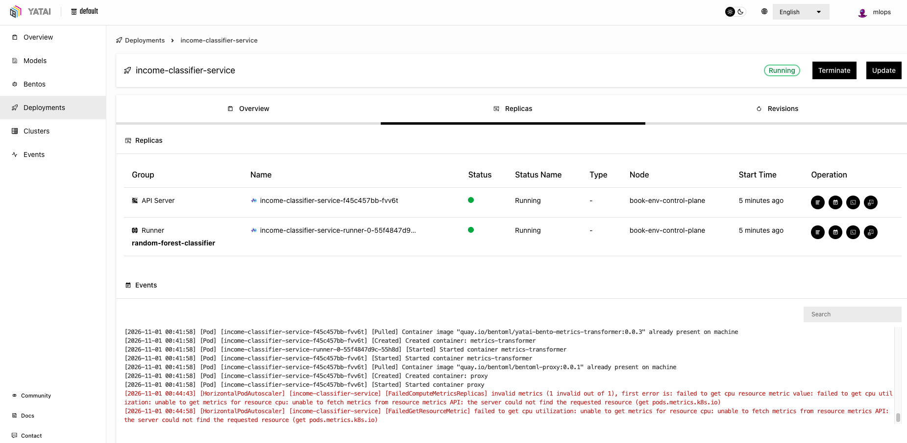
- 무엇이 보이나: 배포 상세의 초록 "Running" 배지, 탭(Overview / Replicas / Revisions), Replicas 표의 API Server 한 행과 Runner(
random-forest-classifier) 한 행, 아래 Events 로그입니다. Events에는 이미지가 이미 있다는 메시지와, 빨간색HorizontalPodAutoscaler … failed to get cpu utilization … metrics.k8s.io오류가 있습니다. - 왜 중요한가: (1) 배포 성공의 최종 확인 화면, (2) API 서버와 러너가 별도 파드라는 구조 확인, (3) 빨간 오류는 해당 클러스터에서 CPU 지표를 얻지 못했다는 뜻입니다.
- 읽는 법: 서비스가 Running이어도 Events의 자동확장 오류는 별개의 문제입니다. 이 화면만으로 원인을 특정 설치 누락(예: metrics-server)으로 확정할 수는 없습니다.
⚠ 원문 정정: HPA 이벤트FailedGetResourceMetric는 "자원 지표 기반 자동확장이 동작하지 않을 수 있다"는 뜻일 뿐 서비스 장애가 아닙니다.Running상태만으로 예측 성공·모델 정확도·자동확장까지 확인된 것은 아닙니다. 원인(예: 클러스터에 metrics API가 없음)은 이 조사에서 확정하지 않았습니다.
그림 6.9 — API 서버 1개와 러너 2개
파드는 API 서버(애플리케이션의 프론트엔드: 요청을 받음)와 러너(백엔드: 모델을 들고 추론) 두 종류입니다. API 서버가 러너와 통신해 예측을 받으며, 배포 구성에서 둘을 독립적으로 스케일할 수 있습니다.
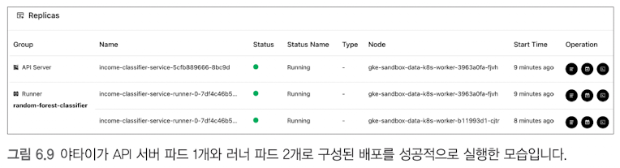
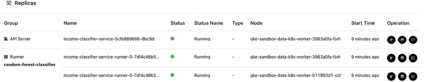
- 무엇이 보이나: Replicas 표의 API Server 1행과 Runner
random-forest-classifier2행이 모두 Running입니다(서로 다른 노드, 9분·8분 전). - 왜 중요한가: 프론트와 백엔드의 분리, 러너만 2개로 늘 수 있음을 시각화합니다. 앞의 실습 환경 화면(러너 1개)과 비교하면 최소 1, 최대 2라는 오토스케일 범위가 보입니다.
- 읽는 법: Group 열로 역할을, Node 열로 위치를 읽으세요. 파드 수와 파드 안 컨테이너 수는 다르니 표의 행을 기준으로 세세요. 원문에는 API 1개·러너 2개 사례와 각 1개 사례가 모두 있어, 항상 같은 수로 배포된다고 단정하지 않습니다.
kubectl get ingress -n yatai를 보면 BentoML이 서비스와 통신할 수 있는 인그레스도 자동으로 만든 것을 볼 수 있습니다(호스트 이름은 *.sslip.io 형태, IP는 <INGRESS_IP>).
원격 서버에서 접속하기 (포트 포워딩과 SSH 터널)
- 리모트에서 서비스를 포트 포워딩합니다:
kubectl -n yatai port-forward svc/income-classifier-service 3002:3000 --address 127.0.0.1. - 로컬 포트를 3002로 두는 이유: 리모트의 3000과 3001은
docker run한 일반·드리프트 컨테이너가 이미 쓰고 있어 겹치면 포트 포워딩이 실패합니다. - 서비스 포트: Yatai 화면의 Cluster internal URL이
…:3000이었습니다.get svc에서 다르게 나오면 실제 포트로 바꾸세요.NotFound는 서비스 이름이나 네임스페이스가 다른 것이고, 응답이 없으면 파드가 아직 준비 중일 수 있습니다. - 내 노트북에서는 SSH 터널(로컬 13002 → 리모트 3002)을 열고 브라우저로
http://localhost:13002에 접속합니다.
원문은 교과서 예시처럼 Ingress와 외부 도메인을 쓰지 않고 고정 도메인을 설정했으므로, Ingress 객체가 있어도 컨트롤러가 없으면 외부 접속 경로로 쓰이지 않습니다.
그림 6.10 — Swagger 문서
접속하면 스웨거(Swagger) 문서가 표시됩니다. 스웨거는 RESTful API를 기술하고 설명하는 기계 판독 가능한 명세를 사람이 읽고 시험하도록 보여 주는 화면입니다.
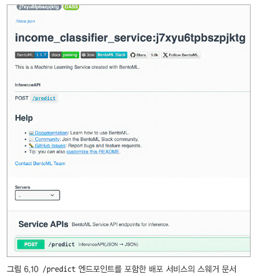
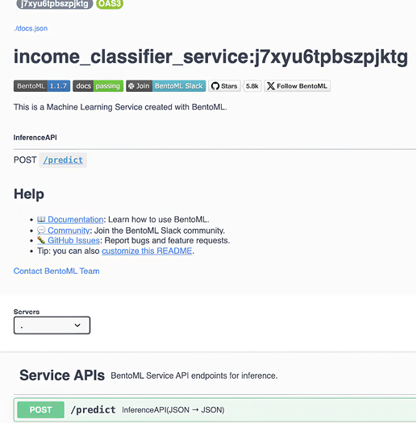
- 무엇이 보이나: 서비스 제목
income_classifier_service:<태그>, BentoML 버전 배지(그림은 1.1.7),InferenceAPI의POST /predict, 아래 "Service APIs"의POST /predict InferenceAPI(JSON → JSON)입니다. - 왜 중요한가:
@svc.api만으로 문서화된 REST API가 자동 생성된다는 증거입니다. 그림의 1.1.7과 실습 기준 1.1.10은 서로 다른 시점의 기록입니다. - 읽는 법:
/docs.json은 기계용 명세 주소,/predict는 예측 기능 주소입니다.POST /predict를 펼치면 "Try it out"으로 직접 호출해 볼 수 있습니다.
그림 6.11 — 샘플 요청과 예측
적절한 사용자 ID로 /predict에 요청을 보내면 응답을 받습니다.
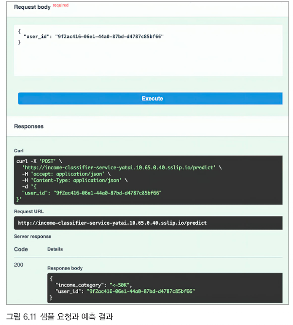
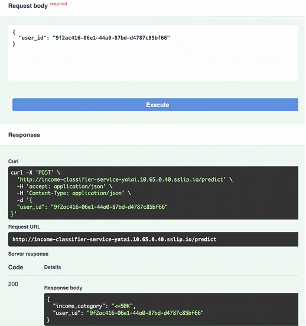
- 무엇이 보이나: Request body에
user_id(<FEATURE_USER_ID>), 파란 Execute 버튼, 그 아래 Curl 명령과 Request URL, Server response Code 200, Response body{"income_category": "<=50K", "user_id": "…"}입니다. 호스트 이름은*.sslip.io형태입니다. - 왜 중요한가: 요청 → 피처 조회 → 모델 결과가 API 응답으로 이어지는 전체 연동의 최종 결과물입니다.
income_category는<=50K또는>50K두 값 중 하나입니다. - 읽는 법: 요청 본문과 응답 본문을 먼저 비교하세요. HTTP 200은 호출이 성공했다는 뜻이며 모델 정확도 지표가 아닙니다. 실제 식별자 값은 복사하지 마세요(책 예제의 공개 샘플 ID일 뿐입니다).
🩺 문제 해결 — Swagger는 열리는데/predict가 500을 돌려줄 때
증상: 배포는 Running이고 Swagger 화면도 열리지만, 요청을 보내면 HTTP 500이 나옵니다.
원인: 이 Bento가 MLflow, Feast, Redis를 로컬 포트포워딩 주소로 부르도록 만들어졌다면, 클러스터의 파드 안에서는 그 주소에 닿지 않습니다. (원문도 이 부분은 아직 확인하지 못했다고 밝혔습니다.)
해결: 파드 로그에서 연결 오류를 확인하고,production.env의 주소를 클러스터 내부 서비스 이름으로 바꾼 뒤 Bento를 다시 빌드합니다.
그림 6.12 — /metrics 기본 지표
BentoML 애플리케이션은 /metrics 엔드포인트도 제공합니다. 프로메테우스(Prometheus)가 이 주소를 주기적으로 긁어(scrape) 관측 가능성을 높일 수 있고, 초당 요청 수나 요청 지연 시간 같은 표준 지표가 들어 있습니다.
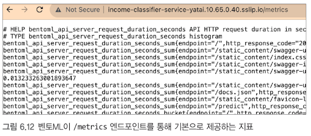
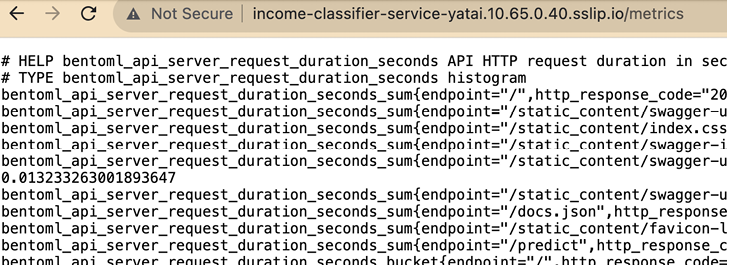
- 무엇이 보이나: 브라우저 주소창의
…/metrics와# HELP bentoml_api_server_request_duration_seconds …,# TYPE … histogram, 엔드포인트별(/,/docs.json,/predict)·HTTP 응답코드별_sum,_bucket줄입니다. - 왜 중요한가: 프로메테우스 텍스트 형식으로 요청 지속시간 히스토그램이 기본 제공되므로 별도 코드 없이 모니터링 기반이 마련됩니다.
- 읽는 법:
# HELP는 지표 설명,# TYPE은 종류, 중괄호 안은 라벨, 끝의 숫자가 값입니다. 이 지표는 서비스 상태를 보여 주며 입력 드리프트나 모델 정확도를 자동으로 입증하지 않습니다.
이렇게 Dockerfile을 직접 쓰거나 쿠버네티스 매니페스트를 구성하거나 /metrics 로직을 따로 쓰지 않고도, bentofile.yaml만 제공하면 BentoML이 이 모든 것을 처리해 줍니다. 그래서 BentoML은 머신러닝 배포를 표준화하는 데 유용합니다. 앞선 두 절에서 소득 분류기를 배치 방식과 실시간 방식으로 각각 배포해 봤는데, 모델이 배포된 채 운영되는 동안 성능이 점차 저하될 위험이 있습니다. 그 원인 중 하나가 입력 데이터가 훈련 때 데이터에서 벗어나는 데이터 드리프트이며, 다음 절에서 다룹니다.
도전과제 — 역할별로 도구를 바꿔 보기
원문은 6.1절 끝에 도전과제 여섯 개를 둡니다. 모두 "Yatai Stack의 어느 역할을 다른 도구로 바꿔 보자"는 과제입니다.
| 도전과제 | 바꾸려는 역할 | 핵심 |
|---|---|---|
1. UI 대신 K8s CRD(bentorequest, bentodeployment)로 배포 |
배포 입력 방식 | UI 클릭을 선언형 YAML로 |
| 2. 내부 Docker 레지스트리 대신 DockerHub·Harbor | 이미지 창고 | 주소·인증·TLS |
| 3. Yatai Registry 대체 (KitOps 등) | 모델·코드 패키징·저장 | OCI 아티팩트 |
| 4. yatai-image-builder 대체 (Kubeflow Pipelines 등) | 이미지 빌드 | 빌드·배포 단계 자동화 |
| 5. yatai-deployment 대체 (KServe 등) | 배포·서빙 | 쿠버네티스 서빙 도구 |
6. /metrics를 프로메테우스·그라파나로 수집 |
관측 | 지표 수집·대시보드 |
과제 1 — UI 대신 CRD로 배포하기
비유. 웹 화면에서 신청서를 작성하는 대신 신청서 파일을 직접 제출하는 방법입니다.
정의. UI에서 Submit을 누르면 결국 쿠버네티스에 BentoRequest와 BentoDeployment 리소스가 만들어집니다. 과제는 이미 설치된 이 두 종류의 CR(실제 객체) 을 YAML로 직접 작성해 kubectl apply하는 것입니다. 첫 요청은 Bento 태그를 가리키고, 배포 객체는 만들어진 Bento CR을 참조합니다. 원하는 상태를 Git으로 버전 관리하면 리뷰·재현·GitOps에 도움이 됩니다. 앞의 OOM 해결에서 BentoRequest를 patch한 경험이 출발점입니다. 빌더 자원과 API·러너 자원은 각각의 필드에 분리해 적습니다.
과제 2 — DockerHub·Harbor 등 다른 레지스트리
비유. 사내 창고 대신 다른 택배 창고를 쓰는 것입니다.
정의. 레지스트리는 완성된 이미지를 저장·전달하는 계층이므로, 주소·인증·push/pull 권한·TLS·이미지 이름과 태그를 맞추면 다른 구현으로 바꿀 수 있습니다. 빌더가 접근하는 주소와 노드 런타임이 접근하는 주소가 각각 유효해야 합니다. 원문의 노드용 socat 프록시는 모든 레지스트리에 필수가 아니며, 그 환경(kind 노드)의 이름 해석 한계 때문에 둔 장치입니다. 계정 정보는 <REGISTRY_USER>, <REGISTRY_PASSWORD>로만 표현하고 쿠버네티스 Secret(imagePullSecret)으로 주입하세요.
과제 3 — Yatai Registry 대체: KitOps와 HAMi 튜토리얼
비유. 모델·코드·데이터를 표준 규격 상자에 담아 기존 창고에 보관하는 방식입니다.
정의. KitOps는 AI/ML 프로젝트(모델·데이터셋·코드·설정)를 ModelKit이라는 OCI 호환 불변 번들로 패키징·버전 관리하고, 기존 컨테이너 레지스트리에 push/pull하는 CNCF 오픈소스입니다. 이는 Yatai의 패키징·저장 역할 일부를 대체할 후보이며, Yatai의 UI·워크로드 제어·자동확장까지 그대로 대체하는 제품은 아닙니다.
원문이 링크한 HAMi 튜토리얼(Lab 17, "Serve Models from a KitOps ModelKit on HAMi")은 ModelKit을 registry에서 받아 파드의 initContainer가 공유 볼륨에 풀고, SGLang(선택적으로 vLLM)이 그 로컬 모델 경로를 읽어 HAMi가 나눠 준 GPU 자원 위에서 서빙하는 흐름을 설명합니다. 배울 점은 "모델 공급 경로"와 "서빙 엔진·GPU 스케줄링"이 별개의 계층이라는 것입니다. 소득 분류기나 Redis 피처 연동을 그대로 구현한 가이드는 아닙니다.
과제 4 — image-builder 대체: Kubeflow Pipelines
비유. 조립기를 바꾸거나, 조립 순서를 다른 작업표에서 실행하는 것입니다.
정의. Kubeflow Pipelines(KFP)는 작업 순서와 컨테이너 실행을 자동화할 수 있지만 그 자체가 이미지 빌더는 아닙니다. Bento 컨테이너화 또는 별도의 OCI 빌더를 실행하는 컴포넌트, 이미지 push, 출력 이미지 태그 전달을 파이프라인에 직접 연결해야 합니다. 코드·모델·의존성 버전을 고정하고 빌드 실패와 배포 실패를 구분하는 것이 핵심입니다.
과제 5 — yatai-deployment 대체: KServe
비유. 같은 모델을 다른 서비스 운영 관리자에게 맡기는 것입니다.
정의. KServe는 쿠버네티스에서 InferenceService 같은 리소스로 모델 서빙 워크로드를 운영하는 CNCF 도구입니다. 원문 링크의 MLflow 가이드는 MLflow 형식으로 저장한 모델을 MLServer의 MLflow 런타임(mlserver + mlserver-mlflow, MLflowRuntime)으로 서빙하며, InferenceService에 modelFormat: mlflow, protocolVersion: v2, storageUri를 지정해 배포·호출하는 흐름을 보여 줍니다.
⚠ 원문 정정 (조건 보완):modelFormat·protocolVersion·storageUri세 필드만 적으면 어떤 MLflow 패키지든 자동으로 실행되는 것은 아닙니다. 공식 예시는 MLServer와 mlserver-mlflow 런타임, 모델 의존성·환경 파일 구성(requirements등)을 전제로 합니다. 기본 MLflow 서빙 런타임은 MLflow 2 계열을 기준으로 합니다(공식 문서로 재확인 필요). 또storageUri는 모델 아티팩트의 위치이지 Bento 아카이브를 뜻하지 않습니다. 환경 파일이 맞지 않아 모델 로드가 실패한 사례도 KServe 토론에서 보고되었습니다.
원문 Bento 이미지의 /predict를 유지하려면 KServe의 커스텀 서빙 컨테이너 경로와 연결할 수 있고, MLflow 모델을 표준 런타임으로 직접 제공하려면 Feast 피처 조회·더미 인코딩·출력 매핑을 별도의 전처리/어댑터(transformer)로 옮겨야 합니다. 따라서 같은 user_id 요청이 아무 수정 없이 KServe MLflow 런타임에서 처리된다고 가정하면 안 됩니다. 과제는 기능별 대응과 입력·출력 계약을 비교하는 일이며, 이름만 바꾸는 설치가 아닙니다. 이 과제는 Yatai 본체가 보관(archived)된 현실에서 의미가 큽니다.
과제 6 — /metrics → 프로메테우스 → 그라파나
비유. 기계의 계기판 값을 중앙 관제판에 기록하는 일입니다.
정의. 프로메테우스가 Bento API의 /metrics를 수집하고, 그라파나가 요청률·오류율·지연·자원 지표를 시각화합니다. 수집 대상·네트워크 접근·라벨·집계 방식이 맞아야 합니다. Evidently 보고서의 드리프트 비율과 프로메테우스의 서비스 지연은 역할이 다르므로, 두 가지를 함께 보면 "데이터가 변했는가"와 "시스템이 고장 났는가"를 구별하는 데 도움이 됩니다.
6.2 데이터 드리프트 모니터링을 위한 Evidently
데이터 드리프트 소개
비유. 5년 전에는 직장인 손님이 많았는데 올해는 학생 손님이 늘었다면, 같은 메뉴라도 판매 양상이 달라집니다. 그 동네 손님 구성을 기준으로 만든 추천 메뉴판은 점점 안 맞게 됩니다.
정의. 데이터 드리프트는 기준 시점(훈련 때)과 지금(운영 중) 사이에 데이터의 분포가 달라지는 현상입니다. 원문은 배포 후 몇 달이 지나 모델 성능이 떨어지기 시작했고, 분석해 보니 모델이 참조하는 일부 피처가 훈련 때 값에서 벗어나 있었다고 가정하며 시작합니다. 이는 설명을 위한 가정이지 실제 장기 운영 실험이 아닙니다. 원인은 목표 변수의 변경, 데이터 속성의 변화, 기반 분포의 변동 등 다양합니다.
모델은 보통 "입력과 출력 사이의 관계가 일정하다", "입력 분포가 예측에 영향을 줄 만큼 크게 변하지 않는다"는 가정으로 과거 데이터에서 훈련됩니다. 그러나 시간이 충분히 지나면 현실이 이 가정을 벗어날 수 있고, 그러면 모델 성능이 저하될 가능성이 있습니다. 그래서 운영 중에 드리프트를 탐지하고 적절히 조치하는 것이 중요합니다.
⚠ 원문 정정: 원문은 드리프트를 "통계적 특성이 변화함에 따라 모델의 성능과 정확도가 저하되는 현상"이라고 원인과 결과를 한 문장에 섞어 정의합니다. 정확히는 드리프트 자체는 기준 데이터와 운영 데이터의 분포 변화이고, 성능 저하는 그로 인해 생길 수 있는 결과입니다. 정답(레이블) 없이 입력 분포의 차이만으로 성능이 떨어졌다는 것을 증명할 수는 없습니다. 분포 변화는 성능 저하의 "대리 신호(proxy)"이며, 실제 성능은 정답을 모아 분류·회귀 지표로 따로 확인해야 합니다.
드리프트의 종류 (원문 4가지)
원문은 아래 네 가지를 나열합니다. 아래 표는 원문 설명에 일반적인 정의를 함께 붙인 것입니다.
| 유형 | 원문 설명 | 정확한 의미(일반 용어) |
|---|---|---|
| 레이블 드리프트 (Label drift) | 지도 학습에서 목표 변수(정답)가 시간이 지남에 따라 변화. 예: 제조에서 "불량"으로 보는 기준 자체가 달라짐 | 목표(정답)의 분포 변화라는 뜻으로 쓰이지만, 원문의 "불량 판정 기준 자체 변경"은 정의가 바뀌는 것이라 아래 개념 드리프트에 더 가깝습니다 |
| 사전 확률 이동 (Prior probability shift) | 분류에서 각 클래스의 사전 확률이 변동. 예: 사기 탐지에서 양성·음성 사례 비율이 시간에 따라 달라짐 | 정답 클래스 비율 P(y)의 변화. 엄밀한 label shift는 클래스별 입력 분포가 그대로라는 전제를 붙입니다 |
| 공변량 이동 (Covariate shift) | 입력 피처의 분포가 시간에 따라 변화. 예: 인구통계·위치·행동 양식 | 입력 분포 P(X)의 변화. 엄밀하게는 입력과 정답의 관계가 그대로라는 전제를 붙입니다 |
| 급격한 드리프트 (Sudden drift) | 외부 요인(팬데믹, 중대한 시장 사건)으로 갑자기 변화 | 변화의 시간 양상이 갑작스러운 경우. 공변량·개념 변화와 동시에 나타날 수 있습니다 |
원문에는 개념 드리프트(concept drift) 라는 용어가 직접 나오지 않지만, 입력과 정답 사이의 관계 자체가 바뀌는 경우(P(y|X)의 변화)를 따로 구분해 두면 이해가 쉽습니다. 네 가지는 서로 배타적인 목록이 아니며, 여러 유형이 한꺼번에 나타날 수 있습니다.
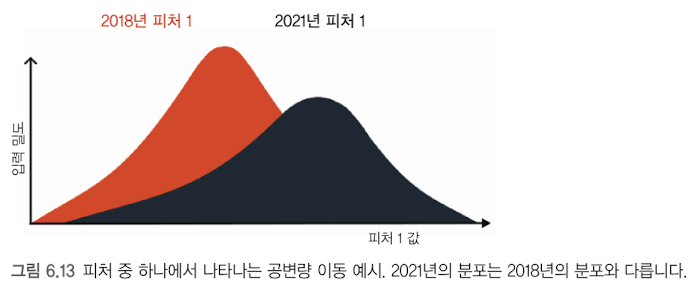
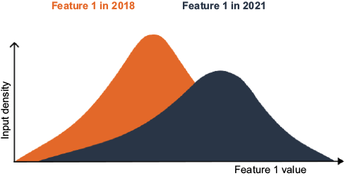
- 무엇이 보이나: 가로축 "피처 1 값", 세로축 "입력 밀도"에 산 모양 분포 두 개가 겹쳐 있습니다. 주황 "2018년 피처 1"은 왼쪽에서 높고 뾰족하고, 남색 "2021년 피처 1"은 오른쪽으로 이동해 낮고 넓습니다.
- 왜 중요한가: 공변량 이동(입력 피처 분포의 시간 변화)을 가장 단순한 형태로 보여 줍니다.
- 읽는 법: 두 산이 겹치는 부분이 적을수록 분포가 많이 달라진 것입니다. KS나 바서슈타인 같은 검정은 이 "산의 차이"를 숫자 하나로 요약한 것입니다. 이 그림만으로 모델 정확도가 떨어졌다고 읽지는 마세요.
직접 해 보기 — 두 분포가 얼마나 겹치나
통계 검정이 무엇을 비교하는지 감을 잡기 위한 장면입니다. 슬라이더로 현재 데이터의 분포(남색)를 기준 데이터의 분포(주황)에서 오른쪽으로 밀어 보세요. 겹치는 부분이 줄어드는 것이 "분포가 달라졌다"는 직관입니다.
Evidently가 쓰는 통계 검정
정의. 에비던틀리(Evidently) 는 과거 데이터와 추론 데이터에 통계 검증을 실행해 데이터 드리프트를 탐지하도록 돕는 도구입니다. 원문은 세 가지 예를 듭니다.
| 검정 | 대상 | 판정 방식(원문) |
|---|---|---|
| 콜모고로프–스미르노프(KS) 검정 | 수치형 | 두 데이터셋의 누적분포함수(CDF)를 비교. p-value가 임곗값(예: 0.05)보다 낮으면 드리프트 |
| 카이제곱 검정 | 범주형 | 범주 분포가 시간에 따라 바뀌었는지 탐지. p-value 기반 |
| 바서슈타인 거리 (Earth Mover's distance) | 수치형 | 기준 데이터셋과 현재 데이터셋의 확률분포가 얼마나 다른지 "거리"로 측정. 거리가 클수록 드리프트가 큼 |
원문의 참고: KS와 바서슈타인은 수치형에, 카이제곱은 범주형에 주로 쓰고, KS와 카이제곱은 p-value 기반, 바서슈타인은 거리 값을 임곗값과 비교합니다. 에비던틀리는 데이터에 가장 적합한 검정을 자동으로 고르며, 직접 지정하거나 직접 작성할 수도 있습니다.
⚠ 원문 정정 — p-value 해석: p-value는 "우연으로 이만큼 달라질 확률"이나 "드리프트가 진짜일 확률"이 아닙니다. 정확히는 두 데이터가 같은 분포라는 가정(귀무가설) 아래에서, 지금 관측한 차이 이상으로 극단적인 값이 나올 확률입니다. p-value가 작으면 "같은 분포라는 가정과 잘 맞지 않는다"는 신호일 뿐, 모델이 틀릴 확률도, 변화가 참일 사후 확률도 아닙니다.
자동 선택의 실제 규칙 (Evidently 0.5.0)
⚠ 원문 정정 — 기본 검정은 "참조 데이터 행 수"로 정해집니다: 원문의 "수치형은 KS·바서슈타인, 범주형은 카이제곱"은 큰 틀로는 맞지만, 실제 자동 선택은 열의 타입, 고유값 개수, 그리고 참조(reference) 데이터의 행 수에 따라 달라집니다. 중요한 점은 기준이 현재(current) 윈도의 크기가 아니라 참조 데이터의 행 수라는 것입니다. 예를 들어 현재 윈도가 50행이어도 참조 데이터가 30,000행이면 "1000행 초과" 쪽 규칙이 적용됩니다. 또한 Jensen–Shannon은 "발산"이 아니라 실제 구현이 쓰는 거리(distance)입니다.
Evidently 0.5.0 소스(stattests/registry.py)에 따른 표입니다. 고유값 수는 참조와 현재를 합쳐 셉니다.
| 참조 데이터 행 수 | 열 타입 / 고유값 수 | 기본 검정 |
|---|---|---|
| 1000 이하 | 수치형, 고유값 5 초과 | KS |
| 1000 이하 | 수치형(고유값 3~5), 또는 범주형(고유값 3 이상) | 카이제곱 |
| 1000 이하 | 수치형·범주형, 고유값 2 이하 | 비율 차이 Z 검정 |
| 1000 초과 | 수치형, 고유값 5 초과 | 정규화 바서슈타인 거리 |
| 1000 초과 | 수치형(고유값 5 이하), 또는 범주형 | 젠슨–섀넌 거리 |
(이 표는 Evidently 0.5.0 소스를 기준으로 정리했습니다. 다른 버전은 다를 수 있습니다. 텍스트 전용 검정은 이 소득 데이터와 무관해 제외했습니다.)
판정 경계값도 방향이 다릅니다. 0.5.0 기준 기본 임계값은 다음과 같습니다.
- KS: p-value가 0.05 이하이면 드리프트
- 카이제곱, Z 검정: p-value가 0.05 미만이면 드리프트
- 바서슈타인, 젠슨–섀넌 거리: 거리가 0.1 이상이면 드리프트
- 데이터셋 판정: 드리프트 열의 비율이
drift_share(기본 0.5) 이상이면 데이터셋 드리프트
방향에 주의: 거리 기준은 값이 클 때 드리프트이고, p-value 기준은 값이 작을 때 드리프트입니다. 그래서 "임곗값을 모두 올린다"로 일반화하면 안 됩니다. 일반 p-value 해석과 구현의 경계 조건(이상/초과)은 구분해서 읽으세요.
6.2.1 데이터 드리프트 탐지 보고서와 대시보드
쉽게 설명 ① — reference, Report, Metric
원문은 이 절 첫머리에 "쉽게 설명" 접이식 블록을 둡니다. 아래는 그 내용을 정리한 것입니다.
- reference vs current: reference(참조 데이터)는 "모델이 학습했던 때의 정상 데이터", current(현재 데이터)는 "지금 들어오는 데이터"입니다. 이 둘을 비교해 달라졌는지 봅니다.
- Report(보고서): 검사 항목을 담는 바구니입니다. 항목 하나가 Metric(지표) 입니다.
- Metric: 건강검진의 검사 항목과 비슷합니다. 하나의 값만 내는 단일형도 있고(
DatasetMissingValuesMetric()은 결측값 비율 등을 확인), 여러 통계를 한꺼번에 계산하는 묶음형도 있습니다(DatasetSummaryMetric()은 평균·최솟값 등 데이터 요약을 계산). - 수준: 데이터셋 전체를 보는 지표와 특정 열 하나만 보는 지표가 있습니다.
- 출력 형태: 숫자 하나만 보여 주는 지표도, 분포 그래프 같은 시각화를 보여 주는 지표도 있습니다.
- 용어 정리: ME는 오차의 평균(부호 포함), MAE는 오차의 절댓값 평균, MAPE는 오차를 실제값 대비 %로 나타낸 평균입니다.
- 코드 예시: 이 장의
Report와 지표 클래스를 쓰는 코드는 구버전(0.5.x) API 기준입니다. 최신 Evidently에서는 API가 다릅니다(아래 "버전 차이" 참고).
# 구버전(0.5.0) API 기준의 최소 구조
from evidently.report import Report
from evidently.metrics import DatasetMissingValuesMetric, DatasetSummaryMetric
report = Report(metrics=[DatasetMissingValuesMetric(), DatasetSummaryMetric()])
report.run(reference_data=ref_df, current_data=cur_df)
report.save_html("report.html")
에비던틀리는 두 가지 드리프트 유형을 모두 탐지할 수 있도록 간단한 파이썬 SDK를 제공합니다. 탐지하려면 참조 데이터셋(과거 데이터)과 현재 데이터셋(예측을 수행하려는 데이터)만 주면 보고서를 만들 수 있습니다. 지표는 에비던틀리의 핵심 컴포넌트이며, 하나의 보고서에 여러 지표를 조합할 수 있습니다. 각 지표는 데이터셋 수준과 열 수준에 모두 있고, 각자 고유한 시각적 렌더링 방식이 있습니다.
비유로 읽되, 정확히는: 지표는 "계산하고 그리는 단위", 프리셋은 "관련 지표들의 묶음", 보고서는 "정해진 지표를 데이터에 적용한 결과"입니다. 원문 비유 "하나의 값만 나온다"는 비유로 읽어야 합니다. 결측 지표도 행·열 등 여러 필드를 제공합니다.
그림 6.14 — 회귀 모델 성능 지표 예시
그림 6.14는 RegressionQualityMetric을 보여 줍니다. 이 지표는 참조·현재 데이터셋에서 회귀 모델의 성능을 평균 오차(ME), 평균 절대 오차(MAE), 평균 절대 백분율 오차(MAPE)로 측정합니다. 지표별로 표준편차도 함께 제공해 성능 안정성을 가늠할 수 있습니다.
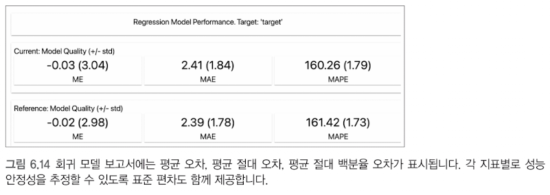
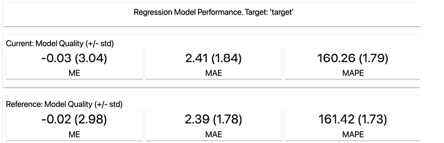
- 무엇이 보이나: 제목 "Regression Model Performance. Target: 'target'". 위 박스 Current: ME −0.03 (3.04), MAE 2.41 (1.84), MAPE 160.26 (1.79). 아래 박스 Reference: ME −0.02 (2.98), MAE 2.39 (1.78), MAPE 161.42 (1.73). 괄호 안 숫자는 표준편차입니다.
- 왜 중요한가: 드리프트 신호(입력 분포의 변화)와 달리 정답을 이용한 성능 측정도 필요하다는 점을 보여 줍니다. 현재와 기준의 성능이 비슷하면 안정적이라고 읽을 수 있습니다.
- 읽는 법: 같은 열끼리(위 현재·아래 기준) 비교하세요. ME는 부호가 상쇄될 수 있고, MAE와 MAPE는 단위가 다르며, 실제값이 0 부근이면 MAPE가 불안정해질 수 있습니다. 괄호 값이 자동으로 신뢰구간을 뜻하지는 않습니다. 이 그림은 회귀 모델 예시이며 이 장의 소득 분류기 성능표가 아닙니다.
그림 6.15 — 열 수준 분포 지표
다른 지표는 풍부한 시각화를 돌려주며 플롯으로 렌더링됩니다. 그림 6.15가 열 수준 지표의 예입니다.
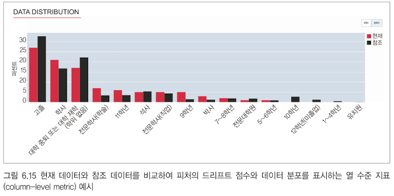
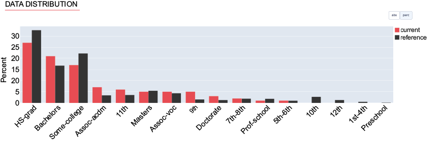
- 무엇이 보이나: "DATA DISTRIBUTION" 막대 그래프. 범례 현재(빨강)·참조(검정), 세로축 퍼센트, 가로축은 학력 범주(고졸, 학사, 대학 중퇴, 전문학사, 11학년, 석사 … 유치원)입니다. 오른쪽 위에
abs/perc토글이 있습니다. - 왜 중요한가: 열 하나의 분포가 기준과 현재에서 어떻게 달라졌는지 사람이 눈으로 확인하는 방법입니다. 고졸·학사·대학 중퇴 등에서 막대 높이 차이가 큽니다.
- 읽는 법: 같은 범주의 두 색 막대 높이를 비교하세요. 주요 범주와 희소 범주를 구별하고, percent 축을 확인하세요. 범주형 열이라 카이제곱 계열 검정이 쓰입니다.
쉽게 설명 ② — 프리셋, 리포트 읽는 법, 두 단계 판정
- 프리셋: 검사 항목을 하나씩 고르기 번거로울 때 쓰는 "종합검진 패키지"입니다. 드리프트용
DataDriftPreset, 품질용DataQualityPreset, 회귀 성능용RegressionPreset이 따로 있습니다. - 리포트 읽는 법: 열마다 "예전 분포 vs 지금 분포"를 그래프로 나란히 보여 주고, 어떤 검정을 썼는지와 점수를 적어 줍니다.
- 드리프트 점수: 바서슈타인 계열 거리에서는 "두 분포가 얼마나 멀어졌는가"이며 0.1 이상이면 드리프트로 봅니다. p-value 기반 검정(KS 등)은 반대로 점수가 임곗값(보통 0.05)보다 작을 때 드리프트입니다.
- 두 단계 판정: ① 먼저 열마다 드리프트인지 판정합니다. ② 그다음 드리프트 열의 비율이 데이터셋 임곗값(기본 0.5) 이상이면 데이터셋 전체를 드리프트로 판정합니다.
- 참고: 열 임곗값 0.1과 데이터셋 임곗값 0.5는 서로 다른 값(단위)입니다. 헷갈리기 쉬우니 구분해 두세요.
원문은 이어서 그림 6.16이 데이터 드리프트 보고서의 예라고 설명합니다. 보고서의 각 행은 참조 데이터셋의 피처 분포(Reference Distribution 열)와 추론 데이터셋의 동일 피처 분포(Current Distribution 열)를 비교하고, 검정 방법과 점수(p-value 또는 드리프트 점수)를 보여 줍니다.
⚠ 원문 정정: 원문 설명의 "Start Test 열"은 문맥상 Stat Test(통계 검정) 열입니다. 또 원문 그림 6.16에는 전체 요약과 결측 패널만 있고 열별 점수 표는 보이지 않으므로, 이미지에서 확인되지 않는 개별 점수는 만들어 넣지 않았습니다.
그림 6.16 — 데이터 드리프트 보고서의 요약 패널
원문이 그림 아래에 단 항목 설명은 다음과 같습니다.
| 항목 | 값 | 뜻 |
|---|---|---|
| Dataset Drift | detected |
데이터셋 전체에 드리프트가 있다고 판정됨 |
| Drift detection threshold | 0.5 |
드리프트 열 비율이 이 값 이상이면 데이터셋 드리프트 |
| Columns | 8 |
검사한 전체 열 수 |
| Drifted Columns | 6 |
드리프트가 탐지된 열 수 |
| Share of Drifted Columns | 0.75 |
6 ÷ 8 = 75% |
| Missing values (Current / Reference) | 0 (0.0%) |
두 데이터셋 모두 결측값 없음 |
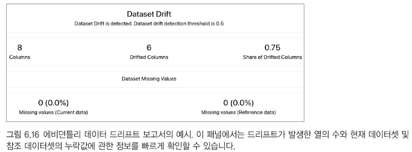
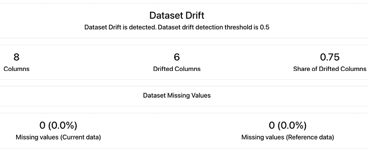
- 무엇이 보이나: "Dataset Drift — Dataset Drift is detected. Dataset drift detection threshold is 0.5". 숫자 세 개 8 Columns, 6 Drifted Columns, 0.75 Share of Drifted Columns. 아래 "Dataset Missing Values"에 현재·참조 모두
0 (0.0%)입니다. - 왜 중요한가: 두 단계 판정(열별 판정 → 비율이 0.5 이상이면 데이터셋 드리프트)의 결과 요약입니다. 6/8 = 0.75 ≥ 0.5이므로 "detected"입니다.
- 읽는 법: 열 개수 → 드리프트 열 개수 → 비율 → 임곗값 순서로 읽으세요. 결측이 없다는 것과 분포가 변했다는 것은 모순이 아닙니다. 0.75는 정확도나 요청 비율이 아니라 "검사한 열 중 드리프트 열의 비율"입니다.
리스팅 6.5 — DataDriftPreset으로 보고서 만들기
위 보고서는 짧은 코드로 만들어집니다. DataDriftPreset을 지정한 보고서 객체를 정의하면 모든 열을 살펴 참조 데이터프레임과 현재 데이터프레임을 비교하는 통계 검증을 수행하는 기본 보고서가 만들어집니다. 보고서를 정의한 뒤 참조 데이터와 현재 데이터를 파라미터로 주어 실행하고, save_html로 HTML 파일에 저장합니다.
# 구버전(0.5.0) API 기준
report = Report(metrics=[DataDriftPreset()])
report.run(reference_data=reference_data, current_data=current_data)
report.save_html("drift_report.html")
보고서는 데이터 스냅샷으로부터 만들어지며, 일별 배치 작업이나 API로 얻을 수 있습니다. 한 시점의 상태를 아는 데는 유용하지만, 일정 기간에 걸쳐 추적하려면 여러 시간 간격으로 보고서를 만들고 비교해야 합니다. 이를 쉽게 하려고 에비던틀리는 모니터링용 웹 대시보드를 제공하며, evidently ui 명령을 실행하면 로컬에서 포트 8000으로 서버가 구동됩니다.
그림 6.17 — 프로젝트가 없는 Evidently UI
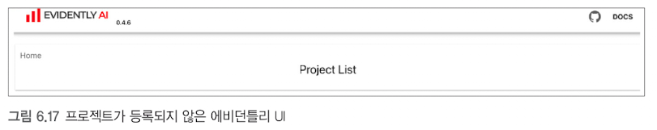
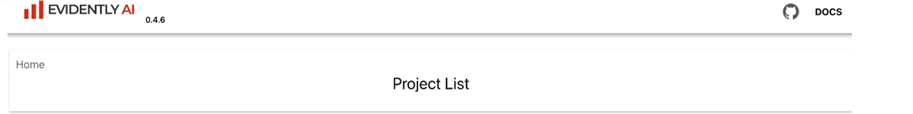
- 무엇이 보이나: 상단 로고와 버전(그림은 0.4.6), 'Home', 가운데 "Project List"가 있고 목록은 비어 있습니다.
- 왜 중요한가: UI 서버가 켜져 있어도 아직 프로젝트가 없을 수 있음을 보여 줍니다. 빈 목록은 서버 실패가 아닙니다.
- 읽는 법: 책 저자의 UI는 0.4.6, 실습 환경은 0.5.0이라 화면이 조금 다를 수 있습니다.
워크스페이스와 프로젝트 (리스팅 6.6)
비유. 검사 결과표를 모델별 문서함에 쌓아 두는 일과 같습니다.
정의. 소득 분류기 대시보드를 만들려면 먼저 워크스페이스와 프로젝트를 만듭니다. 워크스페이스는 모든 데이터 스냅샷을 보관하는 디렉터리이고, 프로젝트는 이 로그를 더 체계적으로 관리하기 위한 하위 디렉터리라고 생각하면 됩니다. 예를 들어 workspace 아래에 project_1, project_2 두 프로젝트가 있고 각각 snapshot_1.json, snapshot_2.json이 있습니다(실제 내부 폴더 모양은 저장소 구현에 따라 다를 수 있고, 개념이 핵심입니다).
# 구버전(0.5.0) API 기준
from evidently.ui.workspace import RemoteWorkspace
ws = RemoteWorkspace("http://localhost:8000")
project = ws.create_project(
name="income-classifier",
description="Used to classify users into multiple income bands",
)
RemoteWorkspace는 UI의 클라이언트 역할로, 이미 실행 중인 UI 서버에 연결합니다(객체를 만든다고 서버가 자동으로 켜지지는 않습니다). 그 안에 income-classifier라는 프로젝트를 만들고 설명을 붙입니다. 원문 실습에는 프로젝트 이름으로 검색해 있으면 재사용하고 없으면 만드는 보조 함수가 있습니다. 프로젝트 ID는 환경마다 다르므로 .env에 <EVIDENTLY_PROJECT_ID>로 넣습니다.
패널: 제목 패널(리스팅 6.7)과 드리프트 비율 패널(리스팅 6.8)
프로젝트 링크를 누르면 빈 대시보드가 보입니다. 대시보드를 구성하려면 패널을 설계해야 합니다. 패널은 보고서 지표를 대시보드 위에 렌더링한 시각화 요소이며, 타입과 함께 너비·제목 같은 속성을 지정합니다.
DashboardPanelCounter: 단일 통계값을 표시합니다.DashboardPanelPlot: 측정값을 선·막대·산점도·히스토그램으로 표시합니다.
제목 패널(리스팅 6.7). 숫자 없이 제목만 보이는 배너입니다.
DashboardPanelCounter(
filter=ReportFilter(metadata_values={}, tag_values=[]), # 필터 없음
agg=CounterAgg.NONE, # 집계 없음
title="Income Classifier Batch Data Drift Dashboard",
)
- Counter 패널: 원래는 "숫자 하나(카운트, 합계 등)"를 크게 보여 주는 카드입니다. 여기서는 숫자 없이 글자만 보여 주는 용도로 씁니다.
- filter: 어떤 스냅샷을 집계에 포함할지 거르는 조건입니다. 비워 두면 전부 씁니다.
- agg: 숫자를 어떻게 요약할지(합계·마지막 값 등). 계산할 게 없으니
NONE입니다. - title: 패널에 실제로 나타나는 글자입니다.
드리프트 비율 패널(리스팅 6.8). 값을 보여 주는 카운터입니다.
DashboardPanelCounter(
title="Share of Drifted Features",
filter=ReportFilter(metadata_values={}, tag_values=[]),
value=PanelValue(
metric_id="DatasetDriftMetric",
field_path="share_of_drifted_columns",
legend="share",
),
text="share",
agg=CounterAgg.LAST,
size=1,
)
PanelValue는 값을 꺼내는 "주소" 입니다.metric_id="DatasetDriftMetric"은 어느 지표의 결과를 볼지(보고서에 이 지표가 들어 있어야 함),field_path="share_of_drifted_columns"는 그 결과 안의 어느 필드를 볼지(그림 6.16의 "Share of Drifted Columns 0.75"가 바로 이 값),legend="share"는 이름표입니다.agg=LAST를 쓰는 이유: 대시보드에는 배치마다 저장한 스냅샷이 여러 개 쌓입니다. 카운터는 숫자 하나만 보이므로 "가장 최근 값"을 고릅니다.size: 패널 너비. 1은 절반, 2는 전체입니다.
원문의 build_evidently_dashboard.py는 이 방식으로 제목, Model Calls, 최근 드리프트 비율, 결측·드리프트 비율 선 그래프, 8개 피처별 드리프트 점수 막대그래프를 구성합니다. 각 열을 구별하려고 metric_args={"column_name.name": "<FEATURE_NAME>"}를 지정합니다. 이 스크립트는 보고서 계산을 대신하지 않고 관제판의 표시 방법을 정합니다. 반복 실행하면 패널이 중복 추가될 수 있어 원문은 최초 구성 때 한 번만 실행하라고 안내합니다.
⚠ 원문 정정 — "Model Calls"의 의미: 패널 제목Model Calls는 모델 호출 횟수처럼 읽히지만, 원문 구현은DatasetMissingValuesMetric.fields.current.number_of_rows를CounterAgg.SUM으로 합산합니다. 배치에서는 평가한 행 수의 합이고, 요청마다 윈도를 겹쳐 평가하는 API 방식에서는 같은 요청의 행이 여러 스냅샷에서 중복 집계됩니다. 따라서 실습 화면의 70124 같은 숫자를 고유 API 요청 수로 해석할 수 없습니다.
반드시 project.dashboard.add_panel()로 패널을 추가한 뒤 project.save() 를 호출해야 합니다. 그렇지 않으면 UI에 변경이 반영되지 않습니다.
그림 6.18 — 비어 있는 대시보드
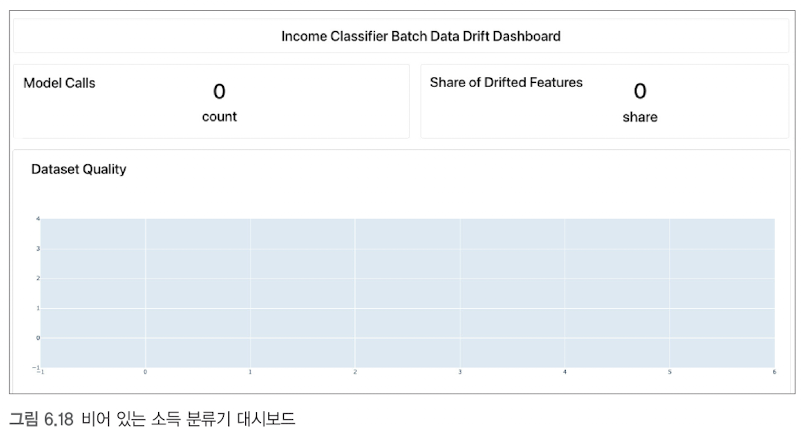
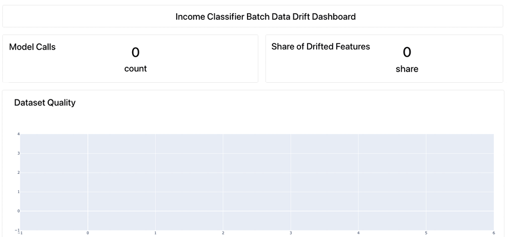
- 무엇이 보이나: 제목 패널 "Income Classifier Batch Data Drift Dashboard", "Model Calls 0 count", "Share of Drifted Features 0 share", 축만 있는 "Dataset Quality" 그래프입니다.
- 왜 중요한가: 패널 정의와
project.save()가 성공해 대시보드 틀은 생겼지만 아직 보고서(스냅샷)가 한 건도 없는 상태입니다. 이후 KFP와 BentoML이 스냅샷을 채웁니다. - 읽는 법: 0과 빈 그래프는 오류가 아니라 "데이터 없음"입니다. Share 0만 보고 드리프트가 없다고 결론 내지 마세요. 패널이 만들어졌다는 사실과 측정 데이터가 있다는 사실은 별개입니다.
Evidently 0.5.0과 이후 버전의 API 차이
이 장의 코드는 Evidently 0.5.0 기준입니다. 공식 마이그레이션 가이드에 따르면 0.6~0.6.7에서 신·구 API가 공존했고(신 API는 evidently.future), 0.7(2025년 4월)부터 신 API가 기본이 되어 from evidently import Report로 가져옵니다. 구 API가 필요하면 0.6.7 이하로 고정하라고 안내합니다. 이름이 없어진 것이 아니라 데이터 입력과 결과를 다루는 방식이 바뀐 것입니다.
| 0.5.0 (이 장) | 0.7 이후 |
|---|---|
데이터프레임과 ColumnMapping을 Report(metrics=[...])에 직접 사용 |
Dataset/DataDefinition으로 입력을 정의하고 새 Report를 사용. DataDriftPreset 이름은 유지 |
report.run(...)과 보고서 객체 저장 |
실행 결과인 스냅샷을 다루는 흐름 |
RemoteWorkspace.add_report(project_id, report) |
RemoteWorkspace 이름과 생성 인자는 유지되지만, add_run(project_id, snapshot) 형태의 스냅샷 업로드를 사용 |
MonitoringService 내부의 report.run, ws.add_report |
새 Report·스냅샷·워크스페이스 호출로 고쳐 써야 함 |
MonitoringService는 Evidently의 기능이 아닙니다. 이 클래스는 책 저자의 저장소(bentoml/data_drift.py)에 직접 정의된 사용자 클래스입니다. 그래서 "Evidently 버전이 올라가 MonitoringService가 사라졌는가?"라는 질문은 전제가 잘못되었습니다. 이 클래스가 내부에서 쓰는Report·워크스페이스 호출을 새 API에 맞게 고치면 되고, 윈도 동작은 애플리케이션이 책임집니다.DataDriftPreset의 데이터셋 기본 판정 기준(드리프트 열 비율 0.5)은 새 버전에도 남아 있습니다.
(RemoteWorkspace의 모든 시그니처 변경을 이 문서가 직접 코드로 확인한 것은 아니며, 사용할 버전의 공식 문서로 재확인하세요.)
6.2.2 데이터 드리프트 탐지 큐브플로 파이프라인 컴포넌트
공장 라인에 비유하면, 원료를 받는 입고 검사(피처 조회) 와 제품을 만드는 조립(추론) 사이에 품질 검수 구역을 하나 더 만드는 일입니다. 원문은 5장에서 만든 추론 파이프라인(MinIO에서 엔티티 읽기 → Feast에서 피처 조회 → 모델 추론 → MinIO에 결과 저장)의 피처 조회 컴포넌트와 추론 컴포넌트 사이에 detect_drift 컴포넌트를 끼워 넣습니다. 이 컴포넌트는 새 피처 데이터를 훈련 데이터(참조 데이터)와 비교한 보고서를 6.2.1에서 만든 배치 대시보드에 쌓습니다. 배치 작업은 모델 검증이나 데이터 품질 모니터링 같은 용도에 잘 맞습니다.
리스팅 6.9 — detect_drift.py가 하는 일
컴포넌트 코드는 다른 KFP 컴포넌트처럼 파이썬 함수 하나(detect_drift)입니다. 원문 리스팅은 지면 때문에 앞부분 시그니처만 보여 주고 나머지 약 100줄은 생략합니다.
# 리스팅 6.9 — 데이터 드리프트 탐지를 위한 KFP 컴포넌트 (앞부분만)
def detect_drift(
model_name: str,
model_stage: str,
mlflow_host: str,
minio_host: str,
access_key: str,
secret_key: str,
reference_dataset_name: str,
feature_dataset_path: str,
evidently_workspace_url: str,
evidently_ui_project_name: str,
# ... (이하 생략)
생략된 본문이 하는 일은 원문 설명에 따라 다섯 단계로 읽을 수 있습니다. 아래는 코드가 아니라 설명을 순서대로 정리한 것입니다.
- MLflow에서 실행 ID 찾기 — 모델 이름과 stage(예: Production)로 그 모델을 만든 run의 ID를 조회합니다.
- 참조 데이터 내려받기 — 그 run에는 4.1.2절에서 기록해 둔 참조 데이터셋 정보가 들어 있습니다. 이 정보로 MinIO에서 참조 CSV를 내려받습니다. 맞는 데이터셋을 찾지 못하면 오류로 멈추는 구조입니다.
- 현재 데이터 읽기 — 앞 작업(
retrieve_features_task)이 Feast에서 가져온 피처 parquet을 읽고, 분포 비교에 쓸 수 없는 식별자user_id는 뺍니다. - 보고서 만들기 — 대시보드와 같은 지표로
Report를 구성하고(데이터셋 드리프트·결측 지표, 범주형 8개 열의 열별 드리프트·요약),report.run으로 참조와 현재를 비교합니다. - 원격 대시보드에 저장 — Evidently 워크스페이스(
RemoteWorkspace)에 연결해add_report(project.id, report)로 보고서를 올리고project.save()를 부릅니다.
왜 지표를 대시보드와 똑같이 맞출까요? 6.2.1에서 만든 패널은 "이 metric_id의 이 필드를 그려라"라고 이름으로 값을 찾습니다. 보고서에 같은 지표가 없으면 패널은 값을 찾지 못해 비어 있게 됩니다. 그림 6.18의 빈 대시보드를 채우려면 패널 정의와 보고서 지표가 짝이 맞아야 합니다.
component.yaml과 파이프라인에 연결하기
함수만으로는 파이프라인이 사용할 수 없습니다. 5.1.1절에서 한 것과 같은 방식으로 component.yaml 에 입력·출력·이미지·실행 방법을 적어 컴포넌트를 정의하고, 파이프라인 코드가 이를 불러옵니다. 완성된 실행 흐름은 아래와 같습니다.
flowchart LR A["read-data-from-minio<br/>엔티티 읽기"] --> B["retrieve-features<br/>Feast 피처 조회"] B --> C["detect-drift<br/>보고서 계산·업로드"] C -->|".after(...) 순서 의존성"| D["model-inference<br/>모델 추론"] B -->|"피처 데이터 전달"| D D --> E["write-data-to-minio<br/>결과 저장"] C -.-> F["Evidently UI<br/>Reports · Dashboard"]
그림에서 detect-drift는 피처 데이터를 읽기만 하고, 추론 컴포넌트에는 피처가 직접 전달됩니다. detect-drift에서 model-inference로 가는 선은 "데이터를 넘긴다"가 아니라 "이 작업이 끝난 뒤에 시작한다"는 순서 표시입니다.
⚠ 원문 정정: 원문 본문은 "드리프트가 탐지되면 파이프라인 실행을 중단합니다"라고 설명하지만, 실제 리스팅과 원문 실습 가이드는 다르게 동작합니다. 추론 컴포넌트는run_inference.after(detect_drift_task)로 연결되는데,.after는 실행 순서 의존성일 뿐 드리프트 여부를 판단하지 않습니다. 컴포넌트에는 드리프트를 판독해 예외를 던지는 코드가 없으므로, 검사가 정상 종료하면 드리프트가 있어도 추론은 그대로 진행됩니다. 뒤 단계가 멈추는 경우는 MLflow·MinIO·Evidently 접속 실패처럼 컴포넌트 자체가 실행에 실패했을 때뿐입니다. 즉 이 컴포넌트는 차단 관문이 아니라 보고·관찰 단계입니다.
드리프트가 있을 때 정말 추론을 막고 싶다면 구조를 바꿔야 합니다. 컴포넌트가 "드리프트 여부"를 불리언 출력으로 내놓고, 파이프라인에서 dsl.If(이전 이름 dsl.Condition)로 그 값에 따라 추론을 실행하거나 건너뛰게 하거나, 정책에 따라 명시적으로 실패시키는 방법이 있습니다(사용하는 KFP 버전의 공식 문서로 재확인 필요). 접속 오류로 멈추는 것과 "정책상 드리프트라서 멈추는 것"은 서로 다른 일이라는 점도 구별해 두세요.
그림 6.19 — 드리프트 탐지 컴포넌트가 포함된 추론 파이프라인 실행
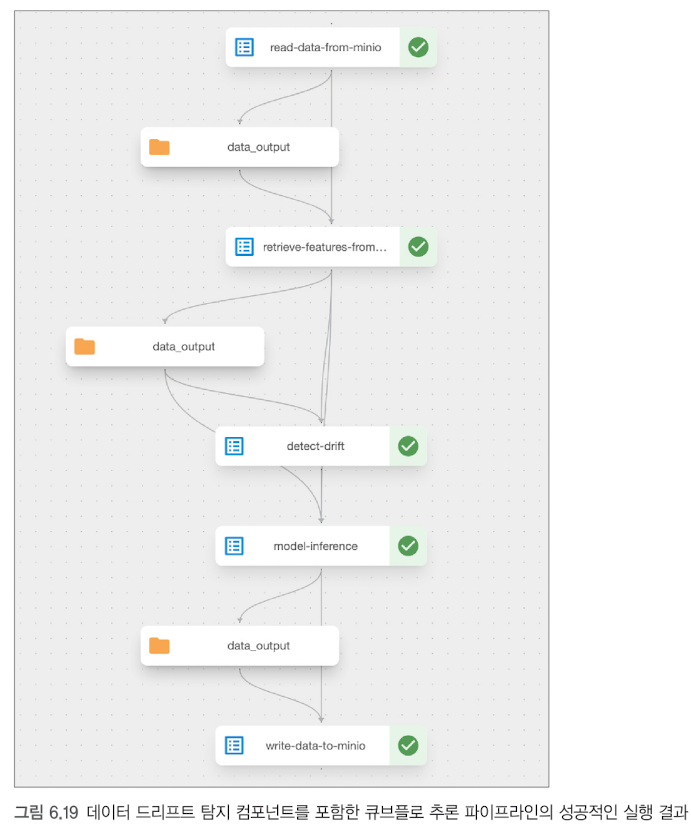
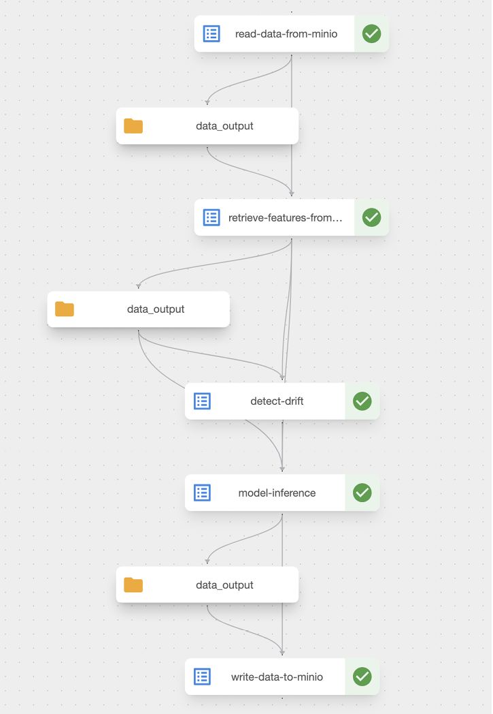
- 무엇이 보이나:
read-data-from-minio→retrieve-features…→detect-drift→model-inference→write-data-to-minio순서의 실행 그래프이고, 모든 단계에 초록 체크가 있습니다. 단계 사이의 폴더 모양 상자는data_output아티팩트(앞 작업이 남긴 산출물)입니다. - 왜 중요한가:
detect-drift가 피처 조회와 추론 사이에 제대로 끼어 끝까지 성공했음을 보여 줍니다. 위 정정에서 본 것처럼, 초록 체크는 "검사가 오류 없이 끝났다"는 뜻이지 "드리프트가 없었다"는 뜻이 아닙니다. - 읽는 법: 작업 상자와 아티팩트 상자를 구분해 위에서 아래로 따라가세요. 어느 단계의 출력이 다음 단계의 입력이 되는지,
detect-drift뒤에 추론이 이어지는지를 확인하면 됩니다.
그림 6.20 — 데이터가 채워진 배치 대시보드
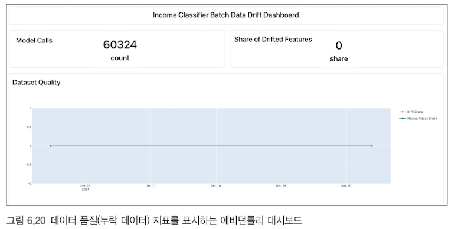
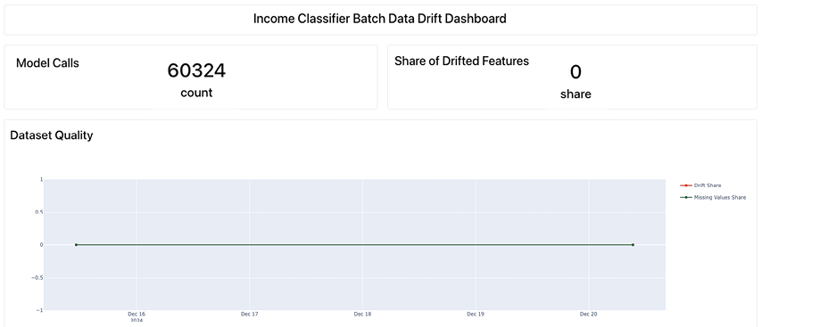
- 무엇이 보이나: "Model Calls" 패널에 60324, "Share of Drifted Features"가 0이고, "Dataset Quality" 선 그래프에서 드리프트 비율(빨강)과 결측 비율(초록)이 모두 0으로 평평합니다. 날짜 축에 측정 시점이 두 개 보입니다.
- 왜 중요한가: 그림 6.18의 빈 대시보드와 달리 모든 패널에 값이 채워졌습니다. 이 설정에서 검사한 열에는 유의미한 드리프트가 검출되지 않았다는 뜻이고, 결측값도 없습니다. "Model Calls"는 모델이 호출된 횟수가 아니라 결측 지표가 센 현재 데이터의 행 수 합계입니다.
- 읽는 법: 점이 두 개뿐이라 선이 직선입니다. 파이프라인을 실행할 때마다 점이 하나 늘고, 날짜 필터로 기간을 좁혀 변화 추이를 볼 수 있습니다. 값이 책과 다르게 나오는 것은 데이터와 실행 횟수가 다르기 때문이며 이상이 아닙니다.
다시 실행할 때 알아둘 점
파이프라인은 이미 등록되어 있으므로 다시 실행할 때는 업로드 단계를 빼고 실행(run)만 새로 만듭니다. UI에서 Clone run을 써도 됩니다. 이때 두 가지를 확인하세요.
- 캐시 (증상: 다시 돌렸는데 보고서가 늘지 않음) — 원인은 KFP가 입력이 같은 단계를 건너뛰고 이전 결과를 재사용하기 때문입니다. 보고서를 새로 쌓으려는 목적이라면
detect-drift가 캐시로 생략되지 않았는지 봐야 합니다. 원문 실습에서는enable_caching=False로 이 문제를 피합니다. 실행이 초록색이어도 Evidently UI의 Reports 탭에 새 보고서가 생겼는지까지 확인하는 것이 안전합니다. - 주소 (증상: 드리프트 컴포넌트가 연결 오류로 실패) — 원인은
localhost가 파드 안에서는 파드 자기 자신을 가리키기 때문입니다. 해결은 파라미터evidently_workspace_url에 파이프라인 파드가 접근할 수 있는 클러스터 내부 주소를 쓰는 것입니다. 내 노트북에서 열리는localhost주소는 파드 안에서는 다른 곳을 가리킵니다.
다음 절에서는 배치가 아니라 실시간 API 쪽을 봅니다. BentoML 서비스를 고쳐서, 요청이 들어올 때마다 모인 데이터로 같은 대시보드를 갱신하는 방법입니다.
6.2.3 API로 배포된 모델의 데이터 드리프트 탐지
사기 탐지나 추천 시스템처럼 실시간 의사결정이 중요한 서비스에서는 배치로 하루 한 번 검사하는 것으로는 부족할 수 있습니다. 원문은 6.1에서 BentoML로 배포한 소득 분류기 API를 고쳐서, API가 요청을 받는 동안 드리프트를 함께 관찰하는 방법을 보여 줍니다. 앞 절의 KFP 컴포넌트가 "정해진 시각에 한꺼번에 검사하는 정기 점검"이라면, 이 절은 "가게를 운영하면서 손님이 올 때마다 최근 손님 취향을 슬쩍 기록해 두는 방식"입니다.
왜 요청마다 검사하지 않고 마이크로배치로 모을까
/predict로 요청이 올 때마다 참조 데이터셋과 통계 검정을 돌리면 결과가 믿을 만하지 않습니다. 통계 검정은 분포를 비교하는 것인데 요청 한 건은 분포가 아니라 점 하나이기 때문입니다. 손님 한 명의 주문만 보고 "전체 손님 취향이 바뀌었다"고 말할 수 없는 것과 같습니다. 그래서 최근 요청의 피처 행을 N개(윈도 크기) 모아 작은 묶음, 즉 마이크로배치로 만든 뒤 참조 데이터와 비교합니다. 적절한 N은 애플리케이션마다 다릅니다.
원문의 동작 설명은 이렇습니다. 윈도 크기를 예컨대 100으로 정하면, 앱이 시작된 뒤 /predict 호출로 샘플을 쌓습니다. 샘플이 가득 찬 뒤에야 참조 데이터와 비교하고, 그 이후에는 호출이 들어올 때마다 가장 오래된 샘플을 버리고 가장 최근 N개만 유지합니다. 최근 N개만 올라가는 컨베이어 벨트를 떠올리면 됩니다. 새 상자가 올라오면 가장 오래된 상자가 떨어지고, 벨트가 가득 찬 뒤부터 그 내용물을 검사합니다.
직접 해 보기 — 슬라이딩 윈도 (N=5로 줄여서)
실제 실습의 윈도는 50(또는 100)이지만, 움직임을 보기 쉽게 N=5로 줄였습니다. 요청이 한 건에 행 한 개라고 가정합니다. 윈도가 50이라면 같은 일이 50번째 요청에서 일어납니다.
아직 요청이 없습니다.
장면 4를 5번 눌러 첫 보고서가 5번째에 생기는 것을 확인하고, 이어서 누르면 요청마다 보고서가 하나씩 늘어나는 것을 보세요. 원문이 "50건을 초과하면"이라고 쓴 부분을 코드 기준으로 바로잡은 이유(6.2.3의 정정)가 이 장면입니다. 윈도는 서비스 프로세스의 메모리에 있으므로, 워커가 둘이면 벨트가 두 개가 되어 각각 절반만 찬다는 점도 함께 떠올려 보세요.
리스팅 6.10 — MonitoringService
MonitoringService는 Evidently의 기능이 아닙니다. 이 클래스는 Evidently 라이브러리가 제공하는 API가 아니라 책의 저자가 예제 저장소의data_drift.py에 직접 정의한 사용자 클래스입니다. 그래서 "Evidently 버전이 바뀌면 MonitoringService도 바뀌는가?"라는 질문은 전제가 틀렸습니다. 이 클래스가 안에서 부르는Report와 워크스페이스 호출만 새 API에 맞게 고치면 되고, 윈도를 다루는 동작은 이 클래스(애플리케이션)가 책임집니다.
원문은 클래스의 앞부분(생성자)만 싣고 나머지 약 37줄을 생략합니다.
# 리스팅 6.10 — 드리프트 리포트를 주기적으로 실행하는 MonitoringService (앞부분만)
class MonitoringService:
def __init__(
self,
report: Report,
reference: pandas.DataFrame,
workspace: Workspace,
project_id: str,
window_size: int,
):
self.window_size = int(window_size)
self.report = report
# ... (이하 생략)
생성자가 받는 값은 "무엇을 계산할지(report), 무엇과 비교할지(reference), 어디에 올릴지(workspace, project_id), 몇 개씩 볼지(window_size)"입니다. 요청이 오면 호출되는 iterate(new_rows)의 동작은 코드와 원문 설명을 종합하면 다음과 같습니다.
- 새 피처 행을 현재 데이터(
current)에 이어 붙입니다. - 길이가 윈도 크기를 넘으면 가장 최근 N개만 남기고 오래된 행을 버립니다.
- 행이 N개보다 적으면 "데이터가 부족해 기다린다"는 로그만 남기고 돌아갑니다.
- N개가 되면
report.run(reference, current)로 보고서를 만들고 원격 워크스페이스에add_report로 저장합니다.
sequenceDiagram
participant Cl as "클라이언트"
participant B as "BentoML predict"
participant MS as "MonitoringService.iterate"
participant EV as "Evidently UI (RemoteWorkspace)"
Cl->>B: "POST /predict (user_id)"
B->>B: "Feast 피처 조회 + 모델 예측"
B->>MS: "iterate(feature_df)"
alt "현재 행 수가 N보다 작음"
MS-->>B: "대기 (Not enough data)"
else "현재 행 수가 N 이상"
MS->>MS: "report.run(reference, current)"
MS->>EV: "add_report(project_id, report)"
end
B-->>Cl: "income_category"⚠ 원문 정정: 원문은 "요청이 50건을 초과하면 첫 번째 보고서가 생성된다"고 쓰지만, 코드의 조건은if current_size < self.window_size: return입니다. 즉 행이 50개가 모인 시점부터 보고서가 만들어집니다. 요청마다 피처 행이 한 개라면 1~49번째 요청은 대기, 50번째 요청에서 첫 보고서, 51번째부터는 가장 오래된 행을 하나 버리고 최근 50행으로 다시 평가합니다. 한 요청에 여러 행이 들어오면 요청 횟수와 윈도 행 수는 같지 않습니다. 또 클래스가 세는new_rows카운터는 원문 구현에서 "몇 건마다 재계산"을 제한하는 데 쓰이지 않으므로, 윈도가 찬 뒤에는 요청마다 보고서가 하나씩 생깁니다.
리스팅 6.11 — 서비스 시작 때 MonitoringService 초기화
BentoML 서비스는 시작할 때 한 번 실행되는 initialize(서비스 상태 준비) 함수가 있습니다. 원문은 이 안에서 MonitoringService를 만듭니다.
# 리스팅 6.11 — RemoteWorkspace와 MonitoringService 설정 (앞부분만)
run = mlflow.get_run(model_run_id)
dataset_source = None
for dataset_input in run.inputs.dataset_inputs:
for tag in dataset_input.tags:
if tag.value == config["REFERENCE_DATASET_NAME"]:
dataset_source = json.loads(
dataset_input.dataset.source
)["uri"]
break
# ... (이하 생략)
생략된 부분까지 합치면 순서는 다음과 같습니다.
- MLflow에서 모델의 run을 찾고, 그 run에 기록된 참조 데이터셋 경로(위 코드의
uri)를 얻습니다. - 그 경로로 MinIO에서 참조 CSV를 내려받아
pandas.DataFrame으로 읽습니다. - 보고서 구조(6.2.1의 지표 목록)를 정의하고,
RemoteWorkspace를<EVIDENTLY_WORKSPACE_URL>로 연결합니다. .env에서EVIDENTLY_PROJECT_ID와EVIDENTLY_REPORT_WINDOW_SIZE를 읽습니다. 테스트에서는 윈도 크기를 50으로 둡니다.- 완성한
MonitoringService를context.state["monitoring_service"]에 보관합니다.
그러고 나서 predict 함수에는 딱 한 줄을 더합니다. 피처 조회와 예측을 마친 뒤, 방금 쓴 피처 행을 모니터링 서비스에 넘기는 연결점입니다.
ctx.state["monitoring_service"].iterate(feature_df)
참조 데이터와 현재 데이터는 열 이름·타입·전처리 수준이 같아야 비교가 의미 있습니다. 원문 본문의 윈도 크기 예시는 100, 테스트 값은 50인데 모두 예시이므로, 실제 값은 .env나 운영 설정에서 정합니다.
빌드와 모의 요청으로 확인하기
드리프트 기능이 들어간 서비스는 별도 정의 파일 bentofile_with_drift.yaml로 빌드하고(bentoml build, bentoml push), 6.1과 같은 방법으로 배포합니다. 이 파일은 드리프트 서비스 정의와 data_drift.py 같은 추가 모듈, 늘어난 requirements를 포함합니다. 동작 확인은 generate_mock_request.py로 합니다. 이 스크립트는 서로 다른 user_id 로 엔드포인트를 수백 번 호출할 뿐입니다. 윈도가 찬 시점부터 요청마다 스냅샷이 쌓이고, 그 점들이 대시보드에 나타납니다.
그림 6.21 — 실시간 사용 사례의 대시보드
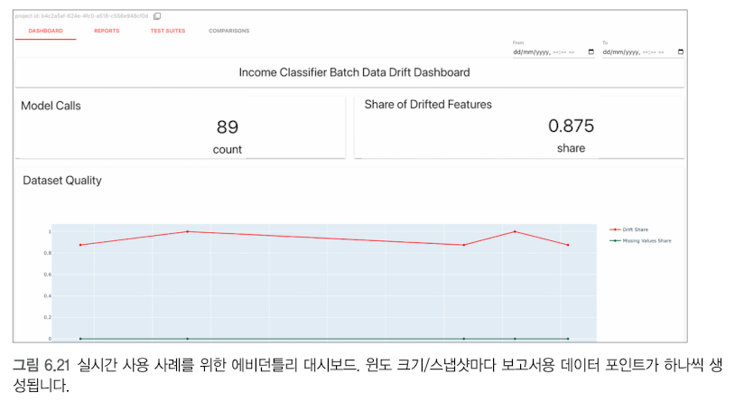
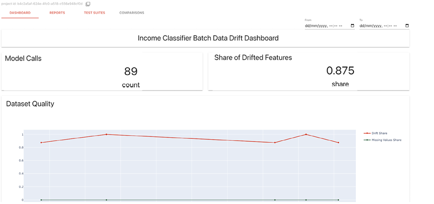
- 무엇이 보이나: DASHBOARD / REPORTS / TEST SUITES / COMPARISONS 탭, 날짜 필터, "Model Calls 89", "Share of Drifted Features 0.875" 패널, 그리고 "Dataset Quality" 선 그래프입니다. 빨간 드리프트 비율 선이 약 0.88과 1.0 사이를 오르내리고, 초록 결측 비율 선은 0입니다.
- 왜 중요한가: 배치(그림 6.20)와 구조는 같지만 데이터 포인트가 훨씬 많습니다. 윈도가 이동할 때마다 보고서가 하나씩 생겨 점이 늘고, 시간에 따른 변화를 선으로 볼 수 있습니다.
- 읽는 법: 0.875는 열 8개 중 7개, 즉 87.5% 가 드리프트로 판정되었다는 비율입니다(원문의 "87%"는 반올림에 가까운 표현). 모델의 정확도나 실패율과는 관계없는 단위입니다. 그림의 "Model Calls 89"가 윈도 50 설정과 어떻게 대응하는지는 원문에 설명이 없어 확인하지 못했습니다.
훈련 데이터인데 왜 87.5%일까 — 작은 윈도와 경보 임곗값
이 값은 이상합니다. 이 실습에서 현재 데이터는 훈련 데이터 자체에서 가져온 것이라 이상적으로는 드리프트가 없어야 합니다. 원문은 원인 후보로 표준 윈도 크기 50이 너무 작다는 점을 듭니다. 표본이 작으면 우연히 한쪽으로 쏠린 것만으로도 분포가 달라 보여 거짓 경보가 늘기 쉽습니다. 참고로 Evidently의 기본 검정은 6.2의 정정에서 본 것처럼 현재 윈도가 아니라 참조 데이터의 행 수로 정해지므로, 윈도가 50행이라고 해서 곧바로 "소표본용 검정"이 선택되는 것은 아닙니다. 어떤 검정이 실제로 쓰였는지는 보고서의 열별 상세에서 확인해야 합니다(사용하는 버전의 공식 문서로 재확인 필요).
다만 "윈도가 작아서"가 원인이라고 단정할 수는 없습니다. 원문도 "표준 크기에서 비롯된 것일 수 있다"고만 말합니다. 표본 추출 방식, 참조 파일 선택, 전처리·스키마 차이, 검정 종류와 임곗값, 요청별 분포도 함께 확인해야 합니다. 검정이 열마다 따로 돌기 때문에 열이 8개면 우연히 기준을 넘는 열이 생기기 쉽다는 통계적 일반론이 있으나, 이 데이터에서 실제 원인인지는 확인하지 못했습니다.
원문이 제안하는 대응과 알아둘 점은 다음과 같습니다.
| 대응 | 효과 | 주의 |
|---|---|---|
| 윈도를 200, 500처럼 키우기 | 표본이 안정되어 우연한 쏠림이 줄어듭니다 | 데이터·계산·메모리가 더 필요하고, 진짜 변화를 늦게 알아챌 수 있습니다 |
| 열별 기준 또는 데이터셋 비율 기준(기본 0.5) 조정 | 민감도를 낮춥니다 | 검정 방식마다 방향이 다릅니다. 거리 기반은 기준을 올리면 둔해지지만, p-value 기반은 기준을 낮추면 경보가 줄어듭니다. "모든 임곗값을 올린다"로 일반화하면 안 됩니다 |
| 연속 여러 번 넘을 때만 알림 | 일시적 경보를 거릅니다 | 원문 추가 의견과 일반 운영 방식이며, 책이 검증한 정책은 아닙니다. 윈도가 겹치므로 연속 보고서는 독립 표본이 아닙니다 |
운영에 옮길 때의 주의점
- 요청 경로에서 계산하는 비용 — 이 예제는
predict안에서 동기적으로 보고서를 계산하고 원격에 저장합니다. 그만큼 응답이 느려지거나 Evidently UI 장애가 API로 번질 수 있습니다. 별도 수집기·큐·주기적 배치로 분리하는 설계를 검토하세요. - 워커가 여러 개일 때 (증상: 윈도 보고서가 안 생기거나 서비스가 시작 오류) — 윈도는 서비스 프로세스 메모리 안의 상태입니다. 워커가 여럿이면 각자 별도 윈도를 가져 데이터가 쪼개지고, 시작 시 같은 파일을 동시에 내려받다 충돌할 수도 있습니다. 원문의 추가 실습은
api_server.workers=1로 이를 피하는데, 데모를 단순하게 만드는 설정이지 확장성의 해법은 아닙니다. - 재시작하면 초기화 — 같은 이유로 프로세스가 재시작하면 윈도가 비어 다시 N개를 모아야 합니다.
드리프트를 만났을 때 — 원문의 4단계
경보가 울렸다고 곧바로 재훈련하는 것이 정답은 아닙니다. 원문은 다음 순서를 권합니다.
- 드리프트 조사 — 변화의 유형과 심각도를 파악하고, 예측 정확도와 공정성에 미치는 영향을 분석합니다. 검정 점수만으로 판단하지 말고 성능, 구간별 데이터, 업무 결과를 함께 봅니다.
- 업스트림 데이터 파이프라인 수정과 전처리 개선 — 수집·처리 과정의 변경이나 오류가 원인이라면 데이터 품질과 일관성을 회복합니다.
- 모델 재훈련 — 현재 분포가 실제 환경의 변화이고 성능에 상당한 영향을 줄 때 최신 데이터로 다시 학습합니다.
- 피처 선택 업데이트 — 피처의 중요도나 의미가 달라졌다면 피처를 추가·제거·수정합니다.
원문은 "데이터 드리프트 모니터링은 단순한 절차가 아니라 데이터 중심 운영의 지속적인 성공을 위한 헌신"이라고 마무리합니다. 어떤 드리프트든 재훈련으로 답하지 말고, 원인에 맞게 조치한 뒤 결과를 다시 평가하세요.
6.3 요약
이 장은 모델을 서비스로 올리는 일(6.1)과 올린 뒤 데이터가 달라지는지 지켜보는 일(6.2)을 한 흐름으로 다뤘습니다. 원문의 요약 다섯 가지를 이 문서의 말로 정리하면 다음과 같습니다.
- 배포 도구는 문턱을 낮춥니다. BentoML 같은 도구는 배포의 기술적 장벽을 낮추고, 데이터 과학자와 엔지니어의 협업을 쉽게 하며, 모델 개발에서 실제 효과로 가는 길을 앞당깁니다.
- 그래도 밑바탕은 알아야 합니다. 배포 과정이 간소화되어도 Docker와 Kubernetes를 이해해야 필요에 맞게 고치고 세밀하게 조정할 수 있습니다. 이 장에서 빌더 파드의 OOM, 레지스트리, 인증서 문제를 직접 다룬 이유입니다.
- 드리프트 모니터링을 파이프라인에 넣으면 일찍 알 수 있습니다. 성능이 떨어지는 징후를 일찍 발견하면 제때 개입하고 비싼 실수를 막을 수 있습니다.
- 분포 변화를 알아채고 바로잡는 일이 정밀도를 지킵니다. 시간에 따라 데이터 분포가 달라지는 것을 인식하고 고치면 모델 열화와 잘못된 의사결정의 위험을 피할 수 있습니다.
- Evidently 같은 도구가 변화를 보이게 합니다. 시간에 따른 데이터 패턴 변화를 식별하도록 도와, 모델 정확도·규정 준수(compliance)·데이터 품질을 유지하게 해 줍니다.
이 장의 흐름 한눈에 보기
flowchart LR A["모델 등록<br/>(MLflow → bentoml.mlflow)"] --> B["Bento 빌드·푸시<br/>(6.1.2)"] B --> C["Yatai로 배포<br/>(6.1.3)"] C --> D["API 서비스 가동<br/>/predict · /metrics"] D --> E["배치 드리프트 검사<br/>KFP 컴포넌트 (6.2.2)"] D --> F["실시간 드리프트 검사<br/>MonitoringService (6.2.3)"] E --> G["Evidently 대시보드"] F --> G G --> H["조사 → 파이프라인 수정 → 재훈련 → 피처 업데이트"]
특히 기억할 정정과 주의점
원문을 읽을 때 놓치기 쉬운 부분을 한곳에 모았습니다. 자세한 근거는 각 절의 "원문 정정" 상자와 마지막의 "이 문서를 읽을 때 알아 둘 점"에 있습니다.
.after는 순서일 뿐입니다. KFP에서 추론을detect-drift뒤에 둔 것은 실행 순서 지정이며, 드리프트가 있어도 검사가 정상 종료하면 추론은 진행됩니다. 막으려면 불리언 출력과 조건 분기가 필요합니다(6.2.2).MonitoringService는 책의 사용자 정의 클래스입니다. Evidently가 제공하는 기능이 아니므로 버전이 올라가면 내부에서 부르는 호출만 고치면 됩니다(6.2.3).- 윈도 50의 첫 보고서는 50번째 행에서 나옵니다. "50건을 초과하면"이 아니라 "50개가 모이면"입니다(6.2.3).
- 높은 드리프트 비율이 곧 재훈련 신호는 아닙니다. 훈련 데이터로도 0.875가 나온 것은 설정과 표본 크기를 먼저 의심하라는 신호입니다(6.2.3).
- 초록색 실행과 새 보고서는 다른 이야기입니다. 캐시가 검사 단계를 건너뛰었다면 실행이 성공해도 스냅샷이 늘지 않을 수 있습니다(6.2.2).
- Yatai 스택과 Evidently API는 시간이 지나며 바뀝니다. 실습 버전과 공식 문서를 함께 확인하세요.
다음 단계로는 도전과제(역할별로 도구를 바꿔 보기)에서 UI 대신 CRD로 배포하기, 다른 레지스트리 쓰기, KServe나 Kubeflow Pipelines로 구성 요소를 갈아 끼우기, /metrics를 프로메테우스와 그라파나로 연결하기를 해 보면 이 장의 구조가 더 잘 보입니다.
부록 A 실습 구간 — 각 단계는 무슨 목적이었나
원문 맨 앞에는 수강생이 자기 서버에서 책 실습을 재현하며 남긴 "실습 가이드" 접이식 블록이 있습니다. 명령어와 로그를 그대로 옮기면 길고 환경마다 달라지므로, 여기서는 각 단계가 무엇을 하려는 것이었는지만 정리합니다. 계정, 서버 주소, 토큰은 <SSH_USER>, <REMOTE_HOST>, <API_TOKEN> 같은 자리표시자로 읽으세요.
| 순서 | 원문 실습 단계 | 목적 | 이 문서의 해당 절 |
|---|---|---|---|
| 1 | SSH 터널 열기 | 서버 안에서만 열린 웹 UI(KFP, MLflow, Yatai, Evidently, Swagger)를 내 노트북 브라우저에서 보기 | 6장 들어가며의 실습 환경 |
| 2 | 저자 repo + Python 3.10 가상환경 | 책의 예제 코드를 받아, 오래된 의존성 조합이 서버에서 돌아가도록 맞추기 | 6장 들어가며의 실습 환경 |
| 3 | BentoML 기본 서비스 | Bento를 만들어 docker run으로 먼저 띄워 보고 API가 응답하는지 확인 |
6.1.1, 6.1.2 |
| 4 | Yatai 설치, 토큰 생성, 모델 확인 | 원격 모델·Bento 저장소를 만들고 bentoml push가 로그인할 길을 열기 |
6.1.3 |
| 5 | yatai-deployment 계열 설치 | 이미지 빌드와 배포를 클러스터가 대신하게 만들기 | 6.1.3 |
| 6 | Evidently UI 설정, 대시보드 스크립트 | 드리프트 보고서를 모아 보여 줄 프로젝트와 패널을 만들기 | 6.2.1 |
| 7 | KFP 드리프트 파이프라인 | 배치 추론 앞에 드리프트 검사를 끼워 넣고 한 번 돌려 보기 | 6.2.2 |
| 8 | 드리프트 변형 BentoML 서비스 | 실시간 API가 요청마다 윈도를 쌓아 보고서를 만드는 것을 확인하기 | 6.2.3 |
7단계: KFP 드리프트 파이프라인의 목적
이 단계는 "검사 단계가 들어간 새 파이프라인을 만들고, 정말 돌았는지 눈으로 확인한다" 는 것이 전부입니다. 드리프트 컴포넌트를 컨테이너 이미지로 만들고, 그 이미지를 쓰는 파이프라인을 컴파일해 KFP에 등록한 뒤 실행합니다. 그림 6.19와 구조가 같은 실행 그래프(그림 아래 IMG-053)를 확인하고, detect-drift 단계의 로그에서 "보고서를 썼다(report written)", "프로젝트를 찾았다", "게시에 성공했다(publish success)"가 이어지는지 봅니다.
실습 그림 ① — 파이프라인 그래프와 실행 로그
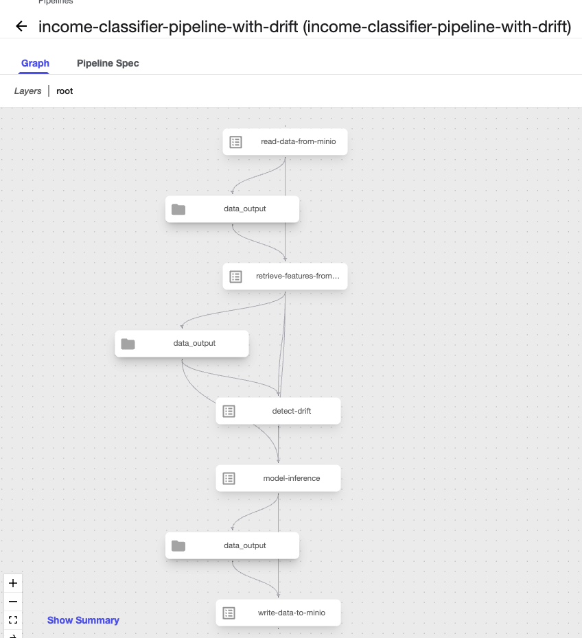
- 무엇이 보이나: Graph 탭에서
read-data-from-minio→retrieve-features…→detect-drift→model-inference→write-data-to-minio가 위에서 아래로 이어집니다. 폴더 모양은 산출물(아티팩트), 목록 모양은 실행 단계입니다. - 왜 중요한가: 드리프트 단계가 피처 조회와 추론 사이에 끼어 있음을 보여 줍니다.
detect-drift에서 나오는 선은 추론으로만 이어지므로 순서 의존일 뿐 결과에 따른 분기는 없습니다(6.2.2의 정정 참고). - 읽는 법:
detect-drift로 들어오는 화살표가 여러 개인 점(피처 데이터와 앞 단계 결과)을 보세요.
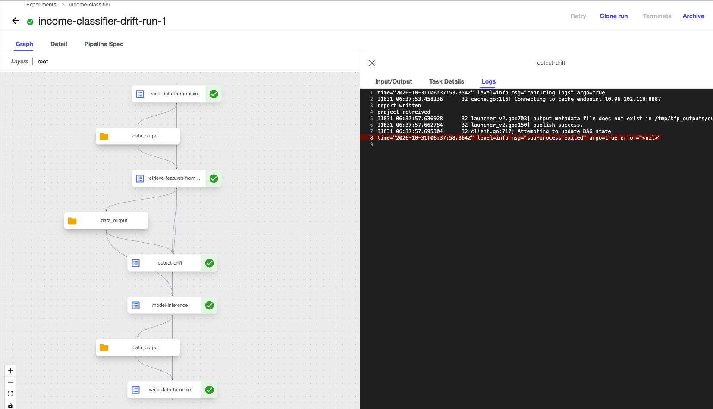
- 무엇이 보이나: 모든 단계에 초록 체크가 있고, 오른쪽 패널에
detect-drift의 로그가 있습니다.report written,project retrieved(원문에는retreived로 오타),publish success, 마지막 줄error="<nil>"입니다. - 왜 중요한가: 컴포넌트가 보고서를 쓰고 Evidently 프로젝트를 찾아 워크스페이스에 올렸다는 코드의 흐름이 로그와 일치함을 보여 줍니다.
- 읽는 법: 마지막 줄이 빨갛게 보여도 오류가 아닙니다.
error="<nil>"은 "오류 없음"이라는 뜻이고, 빨간 강조는 선택된 줄 표시일 가능성이 큽니다(추정).
스크립트로 재실행하기의 목적
파이프라인은 이미 등록되어 있으므로 업로드는 빼고 실행만 새로 만들어, "같은 파이프라인이 돌 때마다 보고서가 하나씩 쌓이는지"를 확인합니다. 원문은 세 가지를 바꿉니다. 실행 이름 번호를 올리고, 캐시를 꺼서(enable_caching=False) 단계가 생략되지 않게 하고, Evidently 주소를 클러스터 내부 주소로 줍니다. 결과는 Evidently UI의 Reports 탭에서 확인합니다.
실습 그림 ② — Evidently 프로젝트와 배치 대시보드
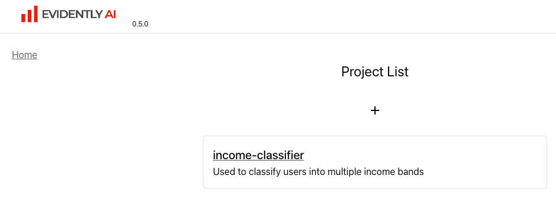
- 무엇이 보이나: 상단 "EVIDENTLY AI" 로고와 버전 0.5.0, "Project List", 그리고
income-classifier프로젝트 카드입니다. - 왜 중요한가: 6.2.1의
create_project가 성공해 프로젝트가 생겼음을 보여 줍니다. 그림 6.17은 이 단계 이전(프로젝트가 없는 화면)이었습니다. - 읽는 법: 카드를 누르면 Dashboard, Reports, Test suites 탭으로 들어갑니다.
- 무엇이 보이나: 제목 "Income Classifier Batch Data Drift Dashboard", "Model Calls 30262", "Share of Drifted Features 0", 그리고 "Dataset Quality" 선 그래프입니다. 빨간 드리프트 비율이 처음 0.5에서 시작해 0으로 내려갑니다.
- 왜 중요한가: KFP 드리프트 컴포넌트가 스냅샷을 두 번 쌓은 결과입니다. 맨 위 카드는 가장 최근 값(0)을, 아래 선은 과거부터의 값을 보여 주므로 둘을 따로 읽어야 합니다.
- 읽는 법: 0.5는 데이터셋 드리프트 기준(열의 50%)과 같은 숫자이니 정확도 50%로 오해하지 마세요. 첫 실행이 0.5였던 이유는 작은 표본 효과일 수 있으나 정확한 원인은 알 수 없습니다.
- 무엇이 보이나: Home / income-classifier / Reports 경로, 탭, 태그 필터, 서로 다른 시각의 보고서 세 개와 각 행의 View·Download·삭제 버튼입니다.
- 왜 중요한가: KFP 재실행 때마다 기존 프로젝트에 새 스냅샷이 쌓인다는 증거입니다. 한 줄이
add_report한 번입니다. - 읽는 법: Timestamp로 최신 보고서를 찾고 View를 눌러 6.2.1에서 본 보고서 화면을 엽니다.
8단계: 드리프트 변형 서비스의 목적
원문은 이 서비스를 Yatai가 아니라 docker run 으로 먼저 띄웁니다. 클러스터 배포의 변수를 줄이고 "윈도가 차면 보고서가 생긴다"는 동작만 빠르게 확인하려는 것입니다. 마지막에 "Yatai 스택으로도 배포해 보자"는 제안이 이어집니다. 핵심 설정은 세 가지입니다.
bentofile_with_drift.yaml— 서비스 진입점을 드리프트 버전으로 바꾸고data_drift.py같은 추가 모듈과 requirements를 포함합니다.api_server.workers=1— 워커를 하나로 줄입니다. 워커가 여럿이면 각자 윈도를 따로 쌓아 N개가 안 차거나, 시작할 때 같은 디렉터리에 동시에 파일을 받다 충돌할 수 있습니다.- 별도 포트와 모의 요청 — 기본 서비스(3000)와 겹치지 않게 다른 포트(3001)로 띄우고, 서로 다른
user_id로 모의 요청 100건을 보냅니다. 실습의 윈도는 100이므로(책 본문 테스트 값은 50), 100번째 요청부터Running report로그와 함께 보고서가 쌓입니다.
실습 그림 ③ — 실시간 요청이 쌓은 대시보드와 보고서 목록
- 무엇이 보이나: "Show in order" 토글, 날짜 범위, 제목 패널, "Model Calls 70124", "Share of Drifted Features 0.5", 그리고 점이 매우 촘촘한 "Dataset Quality" 선 그래프입니다. 화면 제목은 여전히 "Batch"입니다.
- 왜 중요한가: 윈도가 이동할 때마다 보고서가 쌓여 점이 많아진 모습으로, 그림 6.21의 실습판입니다. 제목은 패널 정의에서 온 것이라 실제 보고서 생성 방식과 다를 수 있습니다.
- 읽는 법: "Model Calls"는 고유한 API 요청 수가 아닙니다. 이 패널은 각 보고서가 평가한 행 수를 합산하고, 윈도가 겹치면 같은 요청의 행이 여러 스냅샷에서 다시 세어집니다. 평평한 0.5는 "검사한 열 중 일부가 계속 드리프트로 잡힌다"는 뜻이며, 훈련 데이터에서 뽑은 요청인데도 나오는 이유는 작은 윈도 가설로 설명될 수 있으나 확정하지 못했습니다.
- 무엇이 보이나: 모두 같은 분 단위 시각을 가진 보고서 여섯 줄과 View·Download·삭제 버튼입니다.
- 왜 중요한가: 윈도가 찬 뒤에는 요청마다 보고서가 하나씩 생긴다는 6.2.3의 설명을 그대로 보여 줍니다. 모의 요청이 짧은 시간에 연속으로 들어갔기 때문에 같은 분에 여러 개가 생겼습니다.
- 읽는 법: 시각이 같아 보여도 보고서 ID는 서로 다릅니다. 필요 없는 스냅샷은 휴지통으로 지울 수 있습니다.
이 문서를 읽을 때 알아 둘 점
각 절의 노란색 "원문 정정" 상자는 원문 설명 중 사실과 달라 바로잡은 내용입니다. 값이 시간에 따라 바뀌는 항목은 기준 날짜(2026-11-07)를 함께 적었습니다.
- 버전은 바뀝니다. Evidently 최신 릴리스(0.7.23), Yatai core 저장소의 보관(archived) 상태, yatai-deployment v1.1.21, image-builder 차트 3.0.48은 모두 2026-11-07 기준이며 이후 달라질 수 있습니다. 이 장의 Evidently 코드는 0.5.0 기준이라 최신 버전에서는 import 경로와 결과 객체가 다릅니다(6.2.1의 버전 비교 표).
- 코드 예시는 그대로 실행해 본 결과가 아닙니다. 원문과 공식 문서의 내용을 정리한 것이므로, 따라 할 때는 자신의 환경에서 먼저 시험해 보세요.
- 확정하지 못한 것.
bentoml containerize의NotImplementedError원인, 훈련 데이터에서 0.875가 나온 정확한 원인, 그림 6.21의 "Model Calls 89"와 윈도 50의 정확한 대응은 원문에 근거가 충분하지 않아 원인을 단정하지 않았습니다.RemoteWorkspace의 모든 시그니처 변화와 KFP의 분기 문법(dsl.If등)은 사용할 버전의 공식 문서로 다시 확인하세요. - 외부 링크는 개요 수준으로만 소개합니다. BentoML 사이트, 아키텍처 블로그, KitOps·HAMi 튜토리얼, KServe 홈은 핵심 내용만 간단히 언급했으니 자세한 설정은 각 사이트의 최신 문서를 보세요.
참고 자료
- [원문 링크] BentoML 공식 사이트 (BentoML과 BentoCloud 소개)
- [원문 링크] BentoML·Yatai 스택 아키텍처 설명 글 (그림 출처)
- [원문 링크] 6장 실습 코드 저장소 (동일 이름의 다른 저장소와 혼동 주의)
- [원문 링크] 저자 저장소의 data_drift.py (MonitoringService 정의)
- [원문 링크] BentoML Helm 차트 저장소
- [원문 링크] cert-manager v1.16.2 설치 매니페스트
- [원문 링크] pkg_resources 폐지 안내 (setuptools)
- [원문 링크] KitOps (모델·데이터를 ModelKit으로 패키징)
- [원문 링크] HAMi + KitOps 실습 튜토리얼
- [원문 링크] KServe 홈
- [원문 링크] KServe로 MLflow 모델 배포하기
- setuptools: pkg_resources 폐지와 제거 버전 (v82.0.0)
- setuptools 변경 내역 (NEWS)
- BentoML 1.1.10 containerize 구현
- BentoML 1.2.0 MLflow 연동 소스 (import_model, load_model, get)
- BentoML 1.4.0 MLflow 연동 소스 (get_service와 pyfunc wrapper)
- BentoML 공식 예제: MLflow 모델 서빙
- Yatai 저장소 (core, 보관 상태 확인)
- Yatai 릴리스 목록
- Yatai v1.1.13 릴리스
- yatai-deployment v1.1.21 릴리스
- yatai-deployment v1.1.13 README
- yatai-image-builder v3.0.48 릴리스
- yatai-image-builder v1.1.13 README
- Artifact Hub: yatai-image-builder 차트
- Evidently 문서: 데이터 드리프트 프리셋
- Evidently 문서: 데이터 드리프트 방법 사용자 지정 (기본 검정과 임곗값)
- Evidently 문서: 새 API로의 마이그레이션 안내
- Evidently 블로그: 프로덕션 ML의 데이터 드리프트
- Evidently 0.5.0 소스: 검정 자동 선택 (registry.py)
- Evidently 0.5.0 소스: 데이터셋 드리프트 판정 (data_drift.py)
- Evidently 0.5.0 소스: KS 검정
- Evidently 0.5.0 소스: 카이제곱 검정
- Evidently 0.5.0 소스: 정규화 바서슈타인 거리
- Evidently 0.5.0 소스: Jensen–Shannon 거리
- Evidently 0.5.0 소스: 비율 차이 Z 검정
- Evidently 0.5.0 소스: DataDriftPreset
- Evidently 0.5.0 소스: 워크스페이스 (add_report)
- Evidently 0.7.0 릴리스
- Evidently 0.7.0 소스: 워크스페이스 (add_run)
- Evidently 0.7.0 소스: 새 API의 DataDriftPreset
- MLflow 문서: 모델 레지스트리 (stage 대신 alias 안내)
- MLflow 문서: 모델 레지스트리 워크플로
- SciPy 문서: ks_2samp (KS 검정과 p-value의 의미)